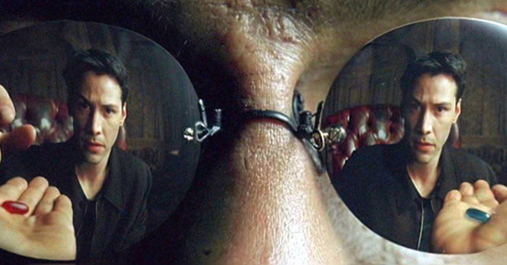

Exploring Catholicism
Table of Contents
- Introduction
- Truth
- Sola Scriptura
- Saved by Faith Alone?
- The Mass: an Overview
- The Eucharist
- Objections
- The Catholic Church Teaches a False Gospel
- The Catholic Church Teaches Idolatry
- TODO The Teachings and Traditions of the Catholic Church Cannot be Trusted
- TODO The Catholic Church is Corrupt
- TODO The Catholic Church has Changed Doctrines
- The Catholic Church as is a Bloated, Unscriptural Bureaucracy
- The Papacy is not Found in the Scriptures
- I Can't Agree with Papal Infallibility
- What About That Wierd Book of Tobias? Is that Even Real?
- I Disagree with the Catholic Rules about Divorce and Remarriage
- The Distinction Between Venial and Mortal Sin
- Miscellaneous
- Saint Mary
- Pro-Life
- Resources
- Devotionals
- The Rosary
Introduction

Figure 1: This is The Calling of St. Matthew by Caravaggio (1599-1600 AD). Caravaggio depicts Levi, the tax collector, going about his business in the activity of his trade, which brought him great wealth through through extortion. Yet, Jesus generously invited Levi to follow Him. Caravaggio paints the moment when Levi recognizes that Our Lord's invitation first as personal and secondly as his own. Levi then had to choose between his fortune or a mysterious and unknown future with this itinerant rabi, Jesus. Would Levi follow his own vision, or that of Jesus? Would he puruse his own will, or God's? What did Levi choose? If he had chosen his own will, purposes, and glory, would we remember St. Matthew to this day? Indeed the painting is anachronistic: the clothing styles from around the 17th century depict a scene from the first century; however, this anachronism liberates the truth depicted here from reaching beyond the first century into the present day. Like Levi, Christ invites all of us at every moment to a deeper walk with Him, a greater surrender to His will, to a deeper conversion, a growing holiness, and into the glorious mystery of who He is. To what are you being called, and what will you choose? Source: Wikipedia.
I am a former Evangelical Christian turned Catholic. I'm not sure there's any formal definition for this term, but I might like to take the label Evangelical Catholic for myself. Why? Because becoming Catholic has given me new ways to build a loving relationship with Jesus, in addition to all the same ways I could do so as an Evangelical Protestant. Thus, I love to talk about joyful faith in Jesus Christ, and how Catholicism unlocks all of it. After all, should only Protestants get to be Evangelical?
How can someone go from a loving, personal relationship with Christ as an Evangelical Christian to a loving relationship with Christ as a Catholic? Many Protestants will say that is not possible, because the Catholic Church does not teach the true Gospel of Jesus Christ. Nonetheless, this has been the journey of not just myself, but many other Catholic converts from various forms of Protestantism or Anglicanism, not to mention other faiths, as well. This site is about the matters of faith and reason that led me to Catholicism.
I never would have been open to exploring Catholicism if I had found no lack in Protestant teachings. Indeed, questions arose for which I found no good answer in and among my Protestant friends or within the Protestant world. The two most significant questions for me were as follows:
- If the Catholic Church gave us the Bible, why shouldn't the Catholic Church be able to authoritatively interpret the Bible? As I learned more about how the Bible came about, I saw how early Church councils defined the contents of the Bible. It seemed to me that to draw the boundaries on the contents of the Bible is a greater power than the ability to interpret the Bible, for if the Church finds some writing objectionable, that very Church that compiled the Scriptures now called the Bible should have defined that objectionable text out of the Bible.
- Was the Eucharist truly the Body and the Blood of Jesus Christ? Jesus taught this in John 6. Ignatius of Antioch, a student of John martyred within 20 year of St. John's own death, also seemed to think so. So did the preponderance of Christian writers through the centuries. While my own Evangelical denomination teaches that elements of communion are merely symbolic, and many of my former fellow Christian believers recoiled at the thought of Christ being truly present in the bread and grape juice, I was startled to learn that even Martin Luther himself thought that Christ was truly present in the Eucharist; and John Calvin taught that Holy Communion was much more than a symbol. The symbolist view was historically considered heretical by Christians, until it swept through the Protestant movement in the 1520s. At this time, Ulrich Zwingli promoted a symbolist view in opposition to Martin Luther, who advocated for the Real Presence. Did the first 15 centuries of Christians get it wrong?
As I explored these questions and found considerable evidence to think that the Catholic Church has the correct position here, I became unsettled in the worldview which had been taught to me in my Protestant upbringing. I was forced to learn more.
Why be Catholic?
Read more ...
It is also worthwhile to briefly list some the things that drew me toward Catholicism. In Catholicism, I can love God in all the same ways I could as a Protestant (prayer, the reading and teaching of the Holy Scriptures, obedience to God), and I have new avenues and resources for growth. Some new tools include:
- The Sacraments. I–like many Protestants–used to ask, "Why do I need the Sacraments?" I have direct access to God. I'm fine with just me, God, and the Bible. I've since come to look at the Sacraments as powerful tools that bring me into full and intimate contact with God. They are a gift He wants us to have. Why wouldn't I we want a gift that God wants me to have? As for me, I want to accept everything the Lord offers me.
- New ways to pray.
- the Mass is the highest form of prayer for Catholics. It is both public and very personal at the same time. It includes an intimate physical and spiritual encounter with Jesus, whether I feel it or not. I can go to Mass just about every day of the week to encounter Jesus. In the Mass, and especially at the reception of the Eucharist, Christ Gives Himself fully to me, and at the same moment, I offer myself–as fully as I know how–to Him.
Mental prayer.
Mental prayer is a gift that some non-Catholics also enjoy; however, within Catholicism, mental prayer–though not entirely up to the individual, but also dependent on sovereign action by God Himself–is a beautiful, intimate, and powerful form of prayer. Because of this dependence on God, we cannot always perform mental prayer at will; however, we can by our will prepare ourselves for whatever mental divine contact God wills to give us. It will require quieting the impulses of the flesh and tuning out the voices of the world and the flesh. Thus, it requires effort and openness to God and His ``still, small voice.'' This is internal and comtemplative. The objective here is for the soul to be ready for God to speak into our lives.
Learn more about Mental Prayer
Gabriel Costello uses writings of Doctors of the Church to give an introduction to mental prayer.
- Well-developed methods for growing into the image of Christ
- The Spiritual Exercises by St. Ignatius Spend some time separated from the world in a place of tranquility to meditate on the life of Christ and prayerfully consider what God may be calling you toward, and discern immediate next steps. Learn how to use for the glory of God every aspect of your life and the circumstances God has allowed to surround you. The Spiritual exercises were developed by St. Ignatius of Antioch, regarded as a spiritual master of discernment.
- The practice of spiritual direction
- Mental Prayer
- Daily prayers and devotions bring Christ into our daily lives
- The Rosary
- The Angelus. Turn your heart toward God at several times during the day. Reflect on St. Mary and her example of submitting to God's will, and the fruitfulness that submission to God causes in our lives.
- The Morning Offering
- The Suscipe
- The Divine Office
- The Liturgical Calendar, in which every day is holy and has significance.
- Communion with the angels and the saints. The angels and the saints can pray
for us!
- In a fallen world where celebrities and heroes lead twisted and immoral lives, the saints lived lives of heroic virtue and provide examples for us on how to love Christ above all the temporal goods this world can offer. Not that love for worldy goods is bad; rather love for worldly goods that is disordered is bad. There is a specific order: God above all goods, for He is our ultimate good; and then, depending on one's state in life, other loves should have their proper order: spouse, children, work, etc. The saints model for us how to put God first, and we can seek their help in doing just that.
- God–in His generous love for us–loves each person so much that He has appointed at least one guardian angel specifically to accompany each individual. Most of us ingore this powerful being, but, in fact, we can ask our guardian angel for intercession and help accoring to God's will.
In the end, there is only one reason to become Catholic: because the teachings of the Catholic Church are true. If the teachings of the Catholic Church are not true, then Catholicism is not worth our time. However, I believe that its teachings hold up under scrutiny, indeed.
Knowing Christ and walking with Him is a journey of joy. I converted to Catholicism because after much study and learning, I believe the teachings of the Catholic Church contain the fullness of truth about God. To know Christ, Who is the Way, the Truth and the Life, we must discern what is true and hold fast to it. I invite you to walk with me down this path.
Figure 2: Come with me if you want to live joyfully!
Do Protestants Ever Become Catholic?
Yes. We are legion. Like me, many Protestants deeply in love with Jesus find themselves becoming Catholic.
Here are some examples of individuals deeply immersed in Protestantism of various flavors–high church, low church, evangelical, mainline, etc. After delving deeper into the Bible and into history, these believers found themselves becoming Catholics.
Jimmy Akin
Jimmy Akin went from Presbyterianism to Catholicism.
Dr. David Anders
Dr. David Anders is extremely knowledgeable about the history and theology of the Protestant Reformation, and he has an encyclopedic knowlege of Catholicism. A friend and student of the late R.C. Sproul, Dr. Anders eventually converted to Catholicisim and is a leading Catholic apologist in the U.S. He hosts a live weekday call-in radio/TV show named Called to Communion.
Dr. Francis Beckwith
Dr. Frank Beckwith is a philosophy professor at Baylor. After a personal encounter with Jesus Christ, he spent decades in the Evangelical world. Later, he reverted to Catholicism.
Dr. Scott Hahn
Dr. Hahn was a Presbyterian, and he converted to Catholicism during Protestant seminary. Dr. Hahn exudes joy, and his theology is deeply rooted in Scripture.
Dr. Taylor Marshall
Curtis Mitch
Curtis started out as a Catholic, entered into a personal relationship with Christ through Campus Crusade for Christ (called Cru these days), learned the Bible and histor, and came back to Catholicism.
I relate to this story very much.
Keith Nester
Keith Nester was a Methodist minister who became Catholic.
Candace Owens
Matt Selby
Matt Selby was an Evangelical Free Christian who served as a missionary. He converted to Catholicism in 2014.
Tim Staples
Tim Staples was an Assemblies of God youth pastor who converted to Catholicism. Today, Tim is an apolotist for the Catholic Answers.
Truth
It is helpful to begin with the concept of truth, because if there is no truth, then there is no point in discussion. We show first that there must be truth; and second, that truth is absolute. Along the way, we pick up an important tool, the principle of non-contradiction, which we can use to demonstrate that some ideas (or propositions) are invalid and must be rejected.
There must be Truth
An important starting point is truth. Truth must exist, and it must be absolute. If not, then why do we even spend time talking, discussing, and debating? Why not allow everyone to go off on their own and manifest his or her own reality as he or she sees fit? Clearly this is absurd.
We can more rigorously conclude that there must be truth if we start with the another antithetical proposition, which we call proposition A:
Proposition A
There is no truth.
The problem with proposition A arises when we ask, "Is A true?" If the response is yes, then a truth exists, and A becomes false. This is a contradiction, and it cannot possibly be valid according to the rules of logic, namely the principle of non-contradiction.
The Principle of Non-contradiction
The principle of non-contradiction is a law of logic:
The Principle of Non-Contradiction
A proposition cannot be both true and false at the same time in the same respect.
This is foundational to logical reasoning and coherent thought.
The principle–sometimes called a law–of non-contradiction tells us that there is no truth is invalid, and it must be rejected. If we reject there is no truth, then we are left with the principle that there must be truth.
This is comforting when we remember Jesus Christ claimed to be the Way, the Truth, and the Light. The truth is something foundational and concrete.
More on the Principle of Non-contradiction
Learn more about this ...
For more information on this topic, you may wish to watch or listen to the following:
Truth is Absolute
Let's try another statement, proposition B:
Proposition B
There is no absolute truth.
We can explore the validity of B in much the same way as we did for A. We can ask if B is absolutely true. If the answer is yes (it is absolutely true)–as so many who would invoke proposition B would like us to believe–, then B has negated itself, again becoming absurd and invalid. Now, not only can we conclude that there must be truth, but also that truth is absolute.
Faith and Reason
Now that we know that truth exists, and reason can help us access truth, we might want to consider the relationship between faith and reason. By reason, we can uncover truth through deduction; and the scientific method–built on induction–is an extension of reason by which we can uncover truths about the created universe. Also, we have noted that by reason, we can uncover truth about the cause of the universe because of what we know about the universe through observation.
But, what about faith? Faith is reception of or tust in the testimony of others about things we are not able to observe directly nor reason about directly. We use faith in the practical world on a regular basis. For example, we ask someone where to find a place or a thing; they tell us, and we follow their instructions. In the realm of faith in God, we receive revelation from God through the Church or the Scriptures. This is often information we cannot obtain through reason alone. For example, we could reason that God exists, but we could not obtain without revelation that God is one being in the Persons of Father and Son and Holy Spirit.
Here is a clarifying video about how faith and reason work together.
For an excellent discussion on faith and reason, you may wish to read the encyclical Fides et Ratio by Pope St. John Paul II.
Summary
In addition to having shown that there must be truth and truth must be absolute, we also have acquired the principle of non-contradiction. This is very important, because it allows us to identify and reject ideas which are invalid based on contradictions within the ideas themselves. I believe this is also a tool for theology: something cannot be both true and false at the same time in the realm of faith. Such a theological proposition would contradict itself, and it would be invalid.
Applications of Truth
Now that we know that truth exists and it is absolute, we are in a position to apply it. We can do so in a few ways. I will use it to argue the following:
The universe tells us that there is a God. It doesn't necessarily tell us directly that God is like the God of Christians, but it leads us to something that fits the kind of being in which Christians believe to be God, along with the faithful of other religions. To know more about this being, we would need to spend more time discussing the revelation given to us by reason and nature, or we need to add divine revelation.
What is God?Read more ...
To learn what God is like, we can look to the universe. We can argue the following:
- Anything that has a beginning has a cause.
- The universe has a beginning.
There are two ways to support this:
- Using evidence from science.
- Using reason alone.
- If the universe has no beginning, it would have endured for an infinite amount of time to arrive at the present.
- It is impossible to traverse an infinite period of time to arrive at the
- Thus, the universe has a cause.
It turns out that the universe has plenty to tell us about its cause. The universe contains all matter, energy, space, and time–or else it wouldn't be the universe. Since the universe contains all matter, energy, space and time, its cause must be independent of each of these. In other words, the cause of the universe must be immaterial (independent of matter, energy, and space) as well as eternal (independent or outside of time). At this point, the cause of the universe begins to match the characteristic of the entity Christians and adherents of other faiths call God. And since this cause of the universe is outside of space and time, we can say that it is unchanging, for without time, there is no change.
What we have learned about the cause of the universe appears to be lacking some features of what Christians call God. In particular, the universe does not immediately indicate that its cause has a personality. That is, we have not yet established that the cause of the universe is a personal entity.
Now, we may ask, what could cause the unchanging cause of the universe to create the universe? If the cause of the universe is unchanging, then nothing could make it create a universe. However, such an all-powerful entity chose to create out of its own free will. To posess a will and the faculty of choice could explain the creation of the universe. For the cause of the universe to have free will and choice implies personhood or personality within this immaterial and eternal cause.
God, is that You?
God does NOT exist!Read more (Really? Are you even Christian?!?) ...
I declare it's true: God does not exist.
To understand this, we must understand what exist means. The word "exist" comes from Latin: ex means "from, out, outside of," and "ist" comes from sistere, which means "to set up, to cause to stand." Thus, for something to exist conveys the sense that it arises from something else.
While the universe is contingent upon its cause–and as Christians, we believe that cause to be God–God is not existent in the sense that His being arises from something else. Thus, I claim that God does not exist.
Rather, the fullness of teaching about God is that God is being itself. This concept says that God is the fundamental source and essence of existence. Anything that exists does so by sharing in God's being. If God ceased to be, then everything that exists ceases to exist, also.
This concept of God as being itself aligns with God's self-identification as "I AM" (Exodus 3:14; and John 8:58-59). He is not from someone or something else; God simply is.
You are loved. With the help of some divine revelation and human philosophy, follows from the discussion above about God's nature and God's will.
YOU are LOVEDRead about how your existence means God loves you ...
In the Catholic faith, we believe something profound and beautiful: your very existence is no accident. The fact that you are alive—right here, right now—is a sign that God not only created you, but continues to will your existence at every moment. As St. Thomas Aquinas taught, creation isn’t just something God did once, long ago. Rather, He holds you in being with every breath you take. You exist because God loves you into existence.
This is not merely poetic—it is the truth. God is Being itself (“I AM who AM,” Exodus 3:14), and everything that exists shares in His being. But unlike inanimate things, you are made in the image and likeness of God (Genesis 1:27). You are a person—capable of knowing, loving, and choosing Him in return. That is not something arbitrary. It’s a calling, woven into your very being.
And so even in the hardest moments—when life feels heavy, when suffering is close, when God may even seem distant—the truth remains: if you are alive, God is sustaining you. He has not withdrawn His love. In fact, it is often precisely in suffering that He opens the door for you to draw closest to Him.
As the Catechism reminds us (CCC 27), “the desire for God is written in the human heart,” and “God never ceases to draw man to himself.” Suffering doesn’t cancel that call—it can deepen it. When we freely choose to trust Him in our pain, when we choose to remain open to His presence rather than closing in on despair, we are brought nearer to the Cross—and through it, to the Resurrection.
Jesus Himself did not avoid suffering. He entered it fully, out of love for us. And now, in our own trials, we have the opportunity to unite ourselves to Him—to know Him not only as Creator and Sustainer, but as the Crucified One who is with us, and the Risen One who gives meaning to our pain. St. Paul recognized that suffering has a way of uniting us to Christ and revealing His love for us (Ephesians 3:7-11, NRSVCE):
7 Yet whatever gains I had, these I have come to regard as loss because of Christ. 8 More than that, I regard everything as loss because of the surpassing value of knowing Christ Jesus my Lord. For his sake I have suffered the loss of all things, and I regard them as rubbish, in order that I may gain Christ 9 and be found in him, not having a righteousness of my own that comes from the law, but one that comes through faith in Christ, the righteousness from God based on faith. 10 I want to know Christ and the power of his resurrection and the sharing of his sufferings by becoming like him in his death, 11 if somehow I may attain the resurrection from the dead.
So, the fact that you are alive today means this: God is still offering you His love, His grace, His very life. He is giving you the chance—moment by moment—to choose Him, to seek Him, and to know Him more deeply. Even when the path is dark, He walks it with you.
You are here because God, in His Love, actively wills you to be here. And God is not finished with you yet.
Want to hear this from someone else? Listen to this sound byte from Fr. John Riccardo:
Sola Scriptura
Authority: Bible, Church, or Both?
Patrick Madrid has a great discussion from Danny near the end of Hour 3 on July 29, 2025.
I was quite happy to be an Evangelical Christian, and I certainly believed that the Bible was the only infallible authority I needed. After all, it was through the Scriptures prayer, and the testimony of a friend that I had my first powerful encounter with God. What more did I need?
My travels had me in different Christian denominations. My start was in the Assemblies of God, where I learned the basics of Who God is, and of His great love for us. Then, I transitioned to Calvary Chapel, where I heard amazing expository teaching with beautiful application of both Old Testament and New Testament scriptures. In my military time and during engineering graduate school, I also tried an Evangelical Presbyterian church, a few non-denominationa churches, a Southern Baptist Church, a Missionary Church, and an Evangelical Free church.
At a Presbyterian church, I remember sitting in a Sunday school class, in which a young woman asked the pastor, "Pastor, I have a question I don't know how to handle. It came from a Catholic friend, who asked, 'If the Catholic Church gave us the Bible, why shouldn't the Catholic Church be able to interpret the Bible?'"
I do not recall the pastor's example. It was not nearly as memorable or as cogent as the young woman's question. I let the question go, and I didn't think about it for about 4-5 years.
As time went on, I thought about this on occasion. I remember concluding to myself that the ability to define Scriptures is greater than the ability to interpret it. For example, if you don't like an undeniable interpretation of a certain passage, why cannonize it as Scripture in the first place?
Later, I learned that the process by which the Bible developed. It is not as clear-cut as many would like it to be. This process highlights the need for an additional authority aside from the Bible to even have a Bible. Since the Bible doesn't define itself, to recognize a certain set of scriptures as the Bible requrires an additional authority. Additionally, from Christian antiquity to the modern age, different Christian traditions follow different set of books as their sacred scriptures: there is no uniform agreement about what is the Bible. Any Christian who says "I have the true, infallible Bible in my hand, and the others are incorrect," must explain how they know this is the correct Bible, and how they are infallibly sure. They will no doubt fall back on some authority that says this is the correct Bible, not that one. Furthermore, if that authority has infallibly identified the correct Bible, then we have an infallible authority apart from the Bible. Thus, the Bible cannot be the only infallible authority for Christians.
Is there an Objectively Correct Way to Interpret Scripture?
Read more...
Under sola scriptura, when two individuals disagree on the interpretation of Scripture, there is no objective way to determine whose interpretation is correct. This is highlighted by the following exchange/discussion:
Cliff Knechtle did not leave the questioner or the audience an objective way to determine who is right and who is wrong. It is up to each individual's interpretation, and each party to the dispute had better hope that he has listened correctly to the Holy Spirit. Additionally, by the principle of non-contradiction, we can know that in a dispute when proposed views are contradictory or mutally exclusive, both sides cannot be correct.
This is a major weakness in sola scriptura that can be addressed if not just Scripture alone, but also the other authorities–the magisterial (teaching) authority of the Church and Her Tradition–can be brought in to adjudicate.
When we are no longer bound by sola scriptura, we have other authorities and other tools, which also include natural law, to guide us into all truth in an objective manner.
What are Tradition a the Magisterium?
Learn more ...
The Bible came from somewhere. It actually came from Tradition, and we might think of it as part of Tradition that got written down. The Catholic Church recognizes Tradition and Magisterial Authority as other infallible authorities in the life of a Christian, in addition to the Scriptures. But, what are Tradition and Magisterium?
The Canon of Scripture and the Necessity of Authority
Introduction
The doctrine of sola scriptura is often understood as the belief that the Bible is the only infallible authority for Christian faith and practice. However, this position faces a significant challenge: in order to know what constitutes the Bible, an external authority is required to delineate the contents of Scripture. The Bible itself does not provide its own table of contents. This means that, before one can appeal to the Bible as the sole infallible authority, one must first rely on an authority to define what "the Bible" actually is.
The Role of Authority in Defining Scripture: A Challenge to Sola Scriptura
The doctrine of sola scriptura is often understood as the belief that the Bible is the only infallible authority for Christian faith and practice. However, this position is problematic because it presumes that the Bible is self-defining—yet, the Bible does not contain its own table of contents. Instead, the contents of Scripture were determined by an external authority. The historical development of the Christian canon demonstrates that the Church played a necessary and authoritative role in recognizing and defining Scripture.
If we require another infallible authority to know what Scriptures are included in the Bible, then the Bible cannot be the sole infallible authority for Christian life and worship.
- The Development of the Christian Scriptures
The Bible as we know it today did not appear as a single, bound volume in the early Church. Instead, the books of both the Old Testament and New Testament were compiled over time, with different traditions preserving different sets of books. The process of recognizing and defining Scripture was a complex, authoritative decision rather than an automatic or universally agreed-upon process.
- The Old Testament consists of writings compiled over centuries, with different groups accepting different books.
- The New Testament was written in the first century, but disputes over which books were authoritative continued for centuries.
- Church councils (such as Rome AD 382, Hippo AD 393, Carthage AD 397) played a key role in affirming the New Testament canon.
- The Protestant Reformation in the 16th century led to a rejection of certain Old Testament books previously accepted by Christians.
The very fact that Christians today accept different canons highlights the need for an external authority to determine which books belong in Scripture.
- Different Canons in Use Today
Various Christian traditions use different versions of the Bible. The table below illustrates these differences:
Tradition Old Testament Canon New Testament Canon Established Jewish (Tanakh) 24 books (same content as Protestant 39 books) N/A c. 3rd–2nd century BC (Torah, Prophets), c. AD 90–200 (Writings) Protestant 39 books (Masoretic Text), excludes Deuterocanonicals 27 books 16th century (Reformation) Catholic 46 books (Septuagint tradition, including Deuterocanonicals) 27 books c. AD 382 (Council of Rome, reaffirmed in later councils) Greek Orthodox 49 books (Septuagint, including additional books like 1 Esdras, Psalm 151, 3 Maccabees) 27 books c. AD 692 (Quinisext Council, based on earlier traditions) Russian Orthodox 50 books (Greek Orthodox canon + 2 Esdras in some traditions) 27 books c. AD 692 (Quinisext Council, later Russian tradition) Ethiopian Orthodox 81 books (Septuagint + Enoch, Jubilees, Meqabyan, others) 27 books c. 4th century AD (Aksumite Church tradition) As this table shows, different Christian traditions have differing Old Testament canons. If sola scriptura were true, how would a believer determine which canon to follow without appealing to an external authority?
- The Deuterocanonical Books and the Authority of the Church
The Deuterocanonical books serve as a key example of this issue. These books were part of the Septuagint (LXX), the Greek Old Testament widely used by early Christians, but they were later rejected by Protestant Reformers. They are accepted as Scripture by Catholics and Orthodox Christians, but not by most Protestants.
Here is a list of these books:
Book Included in Notes Tobit Catholic, Orthodox Narrative about piety and divine intervention Judith Catholic, Orthodox Story of a Jewish heroine defeating an enemy general Wisdom (of Solomon) Catholic, Orthodox Philosophical and theological reflections on wisdom Sirach (Ecclesiasticus) Catholic, Orthodox Wisdom literature, similar to Proverbs Baruch Catholic, Orthodox Includes a letter attributed to Jeremiah 1 Maccabees Catholic, Orthodox History of the Jewish revolt against Hellenistic rulers 2 Maccabees Catholic, Orthodox Theological and historical account of Jewish martyrdom and resurrection beliefs Additions to Daniel Catholic, Orthodox Includes The Prayer of Azariah, Susanna, and Bel and the Dragon Additions to Esther Catholic, Orthodox Expands on the Hebrew version of Esther with more prayers and details Many Protestant arguments claim that the Church merely "recognized" which books were inspired, rather than defining them. However, this does not solve the problem of authority:
- The act of recognition itself requires a group or council to make authoritative judgments.
- Recognition relies on criteria such as apostolic authorship, yet these criteria were **set by an authority**—not by Scripture itself.
- The different canons in use today prove that the identification of inspired Scripture was not self-evident, but required a teaching authority.
If a believer chooses a particular canon of Scripture, they are necessarily submitting to the authority that defined that canon. If they claim their canon is infallibly correct, then they implicitly grant infallibility to the authority that established that canon.
- Conclusion: The Limits of Sola Scriptura
Given the historical development of the canon, the role of Church councils, and the differences between Christian Bibles today, sola scriptura as an absolute doctrine is untenable. The Bible is not a self-authenticating authority; its very contents were **established by an external authority**—the Church.
This means that:
- The canon of Scripture itself is an extra-biblical tradition.
- The process of recognizing Scripture requires an authority outside of Scripture.
- The differences in Christian canons today prove that an authoritative Church is necessary to define Scripture.
Thus, the claim that "the Bible alone is the only infallible authority" is self-defeating. Without an infallible Church to define what belongs in the Bible, one cannot even know which Bible to follow. The authority of the Church is inescapable in the formation, recognition, and interpretation of Scripture.
The Development of the Christian Scriptures - More Details
The Old Testament Canon
The Christian Old Testament originates from the Hebrew Scriptures, but its structure, order, and content vary among different Christian traditions.
- Jewish Scriptures and Canonization
- The Torah (Pentateuch) was likely compiled between the 10th and 5th centuries BC.
- The Septuagint (LXX), a Greek translation of the Hebrew Scriptures (3rd–1st century BC), included books not found in the later Jewish Masoretic Text (e.g., Tobit, Judith, Wisdom, Sirach, Baruch, 1–2 Maccabees, additional sections in Esther and Daniel).
- Jewish canonization (c. AD 90–200) led to the rejection of these additional books, favoring the Hebrew texts.
- Christian Adoption of the Old Testament
- Early Christians largely used the Septuagint.
- Some Church Fathers (e.g., Origen, Augustine) accepted the Deuterocanonical books, while others (e.g., Jerome) preferred the Hebrew canon.
- The Council of Trent (1546) reaffirmed the Catholic canon, including the Deuterocanonical books, while Protestants rejected them.
- The Deuterocanonical Books
The Deuterocanonical books are books included in the Old Testament by the Catholic, Eastern Orthodox, and some Oriental Orthodox churches but excluded from the Jewish Tanakh and most Protestant Bibles. These books are considered canonical by these churches but are referred to as Apocrypha by most Protestant traditions.
- List of Deuterocanonical Books
Here are the books classified as Deuterocanonical:
Book Included in Notes Tobit Catholic, Orthodox Narrative about piety and divine intervention Judith Catholic, Orthodox Story of a Jewish heroine defeating an enemy general Wisdom (of Solomon) Catholic, Orthodox Philosophical and theological reflections on wisdom Sirach (Ecclesiasticus) Catholic, Orthodox Wisdom literature, similar to Proverbs Baruch Catholic, Orthodox Includes a letter attributed to Jeremiah 1 Maccabees Catholic, Orthodox History of the Jewish revolt against Hellenistic rulers 2 Maccabees Catholic, Orthodox Theological and historical account of Jewish martyrdom and resurrection beliefs Additions to Daniel Catholic, Orthodox Includes The Prayer of Azariah, Susanna, and Bel and the Dragon Additions to Esther Catholic, Orthodox Expands on the Hebrew version of Esther with more prayers and details - Additional Books in the Orthodox Canon
Eastern Orthodox and Oriental Orthodox traditions accept additional books beyond the Catholic Deuterocanonical books:
- 1 Esdras (Greek Orthodox, Russian Orthodox) – Alternative version of Ezra
- 3 Maccabees (Greek Orthodox, Russian Orthodox) – A different historical account from 1 & 2 Maccabees
- Psalm 151 (Greek Orthodox, Russian Orthodox) – An additional psalm attributed to David
- 2 Esdras (sometimes called 4 Esdras) (Russian Orthodox in some traditions) – Apocalyptic and prophetic work
- Prayer of Manasseh (Greek Orthodox, Russian Orthodox) – A penitential prayer of King Manasseh
- Unique to Ethiopian Orthodox Canon
The Ethiopian Orthodox Church has the widest biblical canon, including all the above books plus additional writings such as:
- Enoch (1 Enoch) – An ancient Jewish apocalyptic text, quoted in the New Testament (Jude 14-15)
- Jubilees – Retelling of Genesis with additional details
- Meqabyan (1, 2, and 3 Maccabees in Ethiopian tradition) – Different from the Greek Maccabees
- Testament of Abraham, Testament of Isaac, Testament of Jacob – Additional patriarchal writings
- Why Are These Books Controversial?
- Jewish View: The Hebrew Bible (Tanakh) does not include these books. They were mostly written in Greek, not Hebrew, and were excluded from the Rabbinic canon (finalized around AD 90–200).
- Protestant View: The Reformation (16th century) removed the Deuterocanonical books from the Old Testament, following the Jewish canon rather than the Septuagint (LXX), which was the Old Testament used by early Christians. Martin Luther and later Reformers considered them useful but not divinely inspired.
- Catholic & Orthodox View: The early Church used the Septuagint (LXX), a Greek translation of the Old Testament, which included these books. Church councils (such as Rome AD 382, Hippo AD 393, Carthage AD 397) affirmed their use. The Council of Trent (AD 1546) formally declared them canonical for the Catholic Church in response to Protestant rejection.
The New Testament Canon
- Formation of the New Testament
- Apostolic writings (AD 50–100) were gradually collected and recognized.
- By AD 150, the four Gospels, Acts, and Paul’s letters were widely accepted.
- Athanasius' Festal Letter (AD 367) listed the 27 books of the New Testament.
- The Councils of Hippo (AD 393) and Carthage (AD 397, 419) reaffirmed the canon.
- The Orthodox Church accepted a similar canon but took longer to formalize it.
- Middle Ages and Reformation
- The canon remained stable in Catholic and Orthodox traditions.
- The Protestant Reformation led to the rejection of the Deuterocanonical books.
Differences in Biblical Canons Today
From Christian antiquity to the modern day, there has been no uniform agreement on what is the correct list of Scriptures. The following table higlights this fact:
| Tradition | Old Testament | New Testament | Canon Established |
|---|---|---|---|
| Jewish (Tanakh) | 24 books (same content as Protestant 39 books) | N/A | c. 3rd–2nd century BC (Torah, Prophets), c. AD 90–200 (Writings) |
| Protestant | 39 books (Masoretic Text), rejects Deuterocanonicals | 27 books | 16th century (Reformation) |
| Catholic | 46 books (Septuagint + Deuterocanonicals) | 27 books | c. AD 382 (Council of Rome, reaffirmed in later councils) |
| Greek Orthodox | 49 books (adds 1 Esdras, Psalm 151, 3 Maccabees) | 27 books | c. AD 692 (Quinisext Council, based on earlier traditions) |
| Russian Orthodox | 50 books (adds 2 Esdras in some traditions) | 27 books | c. AD 692 (Quinisext Council, later Russian tradition) |
| Ethiopian Orthodox | 81 books (adds Enoch, Jubilees, Meqabyan, others) | 27 books | c. 4th century AD (Aksumite Church tradition) |
This table gives us several interesting insights:
- The New Testament writers, writing within 50 AD - 100 AD, used and quoted from the Septuagint, which includes the texts later rejected in the development of the Tanakh (90 AD - 200 AD)
The Problem for Sola Scriptura
Given these historical realities, sola scriptura faces a serious problem: if
the Bible is the only infallible authority, how does one determine what
constitutes "the Bible" without appealing to an external authority?
- 1. The Necessity of an External Authority
Without the Church's authority, one would have no objective way to know which books belong in the canon.
The early Church played a central role in collecting, preserving, and recognizing inspired writings.
- 2. The "Recognition" Argument Does Not Solve the Issue
Some argue that the Church does not define Scripture but merely recognizes inspired writings.
However, recognition itself is an act of authority: it either relies on a group (e.g., bishops, Jewish scholars) or on a test (e.g., apostolic authorship).
If a test is used, then we depend on the authority of those who established that test.
- 3. The Existence of Differing Canons Highlights the Problem
If the Bible were self-evident in its contents, there would be no dispute over which books belong.
Yet, various Christian traditions hold different canons, meaning believers submit to an external authority in choosing the "correct" canon.
- 4. The Infallibility Problem
If a believer holds that their canon is infallibly correct, then the authority that defined that canon must also be infallible.
This contradicts the claim that the Bible alone is the only infallible authority.
Conclusion
The doctrine of
sola scriptura, understood as the Bible being the sole infallible authority, is self-refuting. The very act of defining the Bible's contents requires an external authority. Since different Christian traditions accept different canons, the believer must ultimately submit to an authority beyond Scripture to determine what counts as Scripture in the first place. Thus, the role of the Church in establishing and identifying the Scriptures is indispensable, demonstrating that an authoritative, living tradition is necessary alongside the written Word of God.
Links
Does Everything Have to be in the Bible for us to Believe it?
The Scriptures and the Role of the Early Church
Jimmy Akin discusses Wesley Huff's presentation on the Old Testament.
Dr. John Bergsma, a former Dutch Calvinist pastor, discuss when he came to recognize that sola scriptura was impossible.
Dr. David Anders, Reformed Protestant turned Catholic (testimony) discusses the historical context of the Protestant Reformation. Luther's reformation was an outgrowth of prior movements in the Catholic Church. Lutheran ideas landed in the laity in a way that was different from the way he intended.
Does the Bible Interpret Itself?
Dr. Anders addresses a call about whether the Bible interprets itself.
Saved by Faith Alone?
Introduction
A dogma central to Luther's Protestant reformation is summarized by the phrase sola fide, which is translated "by faith alone." This encapsulates the idea that man is saved or justified in God's sight by faith alone.
Thus, it is important to ask the question: can man be saved by faith alone?
If you wish, you may view a video I made on this very topic:
My conditioning to believe in sola fide was one of the major obstacles for me to embracing Catholicism, even though I was already persuaded that sola scriptura was not defensible, and I favored the Orthodox teaching of the Real Presence of Christ in the Eucharist over the symbolist interpretation of some Protestant groups.
Dr. David Anders also gives a great discussion on sola fide, sola scriptura, and how the Church interpreted the passages that give rise to sola fide. See the first 12 minutes of this video from 2026.01.21:
Jimmy Akin provides one of the clearest and most comprehensive discussions on sola fide that I've seen. A great challenge here is that the Bible uses faith in a few different ways, and it leads us as Christians to understand faith differently. Jimmy helps us navigate this and find a common understanding of the various ways faith is used in the Scriptures. In the end, I think it's helpful to use this more common language so that we can actually compare and contrast Catholic and Protestant views on the role of faith in salvation. It's worthwhile, indeed.
Compare and Contrast: Luther's View vs Catholicism
Watch more...
Dr. David Anders gives a brief summary of the differences between the Protestant and Catholic views on imputed righteousness versus infused righteousness. He draws on Martin Luther's views on the topic.
Finally, we include a link to a clip that discusses the relationship between grace, sacraments, and charity.
Evidence For Sola Fide
Many proponents of sola fide say that the Bible plainly states that man is saved by faith alone in Ephesians 2:8-10:
For by grace you have been saved through faith, and this is not your own doing; it is the gift of God— not the result of works, so that no one may boast (Ephesians 2:8-10, NRSVCE)
This verse excludes works as a means of salvation, leaving only grace and faith as causes of salvation. Thus, a sola-fide adherent will reason, no works done by a human can earn their salvation, and only faith can save.
Furthermore, additional verses support the exclusion of works as a means of salvation:
-
For “no human being will be justified in his sight” by deeds prescribed by the law, for through the law comes the knowledge of sin.
-
Then what becomes of boasting? It is excluded. By what law? By that of works? No, but by the law of faith.
-
yet we know that a person is justified not by the works of the law but through faith in Jesus Christ. And we have come to believe in Christ Jesus, so that we might be justified by faith in Christ, and not by doing the works of the law, because no one will be justified by the works of the law.
-
Well then, does God supply you with the Spirit and work miracles among you by your doing the works of the law, or by your believing what you heard?
-
For all who rely on the works of the law are under a curse; for it is written, “Cursed is everyone who does not observe and obey all the things written in the book of the law.” Now it is evident that no one is justified before God by the law; for “The one who is righteous will live by faith.”[a] 12 But the law does not rest on faith; on the contrary, “Whoever does the works of the law will live by them.”
Because of verses such as these, proponents of sola fide support the dogma that man is justified not by works, but rather by faith alone. Works are insufficient in this view to justify humans–that is, to qualify us for salvation and an afterlife in the loving presence of God.
Eternal Security or the Perseverance of the Saints
Read more ...
Sola Fide also leads to another dogma called eternal security or the perseverance of the saints. Eternal security follows from sola fide, for since one's works cannot contrubte to salvation, they cannot imperil one's salvation. However, even in the Protestant world, there is poor agreement about the perseverance of the saints: Calvinists and Baptitsts tend toward the perseverance of the saints, but numerous Evangelical denominations follow the Arminian tradition, which teaches that a Christian may lose his or her salvation. From this, we can deduce that there is no Scripture that irrevocably establishes eternal security, or the debate would be laid to rest.
Furthermore, several passages of Scripture suggest that one can fall away from salvation. At the very least, these Scriptures should indicate that eternal security is not such a secure doctrine. Notable Scripture passages include:
Matthew 13:1-23 (RSVCE): Here, Jesus gives the Parable of the Sower:
Read more...
3 Then he told them many things in parables, saying: “A farmer went out to sow his seed. 4 As he was scattering the seed, some fell along the path, and the birds came and ate it up. 5 Some fell on rocky places, where it did not have much soil. It sprang up quickly, because the soil was shallow. 6 But when the sun came up, the plants were scorched, and they withered because they had no root. 7 Other seed fell among thorns, which grew up and choked the plants. 8 Still other seed fell on good soil, where it produced a crop—a hundred, sixty or thirty times what was sown. 9 Whoever has ears, let them hear.”
This left his audience, including his disciples puzzled. Later, He explained it to His disciples:
18 “Listen then to what the parable of the sower means: 19 When anyone hears the message about the kingdom and does not understand it, the evil one comes and snatches away what was sown in their heart. This is the seed sown along the path. 20 The seed falling on rocky ground refers to someone who hears the word and at once receives it with joy. 21 But since they have no root, they last only a short time. When trouble or persecution comes because of the word, they quickly fall away. 22 The seed falling among the thorns refers to someone who hears the word, but the worries of this life and the deceitfulness of wealth choke the word, making it unfruitful. 23 But the seed falling on good soil refers to someone who hears the word and understands it. This is the one who produces a crop, yielding a hundred, sixty or thirty times what was sown.”
For clarity, we pair each class of seed with the type of human heart:
Seed along the path illustrates people who do not grasp the message about the kingdom of God.
Parable text:
4 As he was scattering the seed, some fell along the path, and the birds came and ate it up.
Explanation:
19 When anyone hears the message about the kingdom and does not understand it, the evil one comes and snatches away what was sown in their heart. This is the seed sown along the path.
Seed in rocky places illustrates people who receive the message, but do not persevere in it.
Parable text:
5 Some fell on rocky places, where it did not have much soil. It sprang up quickly, because the soil was shallow. 6 But when the sun came up, the plants were scorched, and they withered because they had no root.
Explanation:
20 The seed falling on rocky ground refers to someone who hears the word and at once receives it with joy. 21 But since they have no root, they last only a short time. When trouble or persecution comes because of the word, they quickly fall away.
This raises some interesting questions:
- In the parable, "It sprang up quickly" is "someone who hears the word." Did the person experience the life of Christ and then fall away? The defender of eternal security would say they never were a believer in the first place, but is that a sound interpretation? The defensor of eternal security will say that it is sound, because it supports the desired narrative and fits in with the interpretive lens of eternal security. However, it appears that in contrast to the individual who simply did not understand the message, this person actually did, and this person bore evidence of the new life in Christ; and that this person failed to persevere.
- What does "fall away" mean? The eternal security ally would say that such a person only looked like a genuine beleiver, but really wasn't in the first place. But, how can one "fall away" if they were not first connected to Christ in the first place?
The seed on rocky ground seems to represent individuals who fall away from their salvation due to external pressures (trouble or persecution). For simplicity, we may call this the weak Christian, since he cannot endure the trouble or persecution.
Seed falling among thorns is paired with individuals who fail to persevere due to a temporal, worldly perspective obscuring their perspective on things eternal.
Parable text:
7 Other seed fell among thorns, which grew up and choked the plants.
Explanation:
22 The seed falling among the thorns refers to someone who hears the word, but the worries of this life and the deceitfulness of wealth choke the word, making it unfruitful.
Like the weak Christian, this, worldly Christian exhibits the new life, but fails to persevere. This new life is choked out (it could not be choked out if it was not alive in the first place) because this new believer is distracted from things eternal by things of the world.
Seed falling on good soil represents fruitful Christians.
Parable text:
8 Still other seed fell on good soil, where it produced a crop—a hundred, sixty or thirty times what was sown. 9 Whoever has ears, let them hear.”
Explanation:
23 But the seed falling on good soil refers to someone who hears the word and understands it. This is the one who produces a crop, yielding a hundred, sixty or thirty times what was sown.”
The defender of eternal security may suggest that since the fruitful Christian is described as one who hears and understands the message, the weak Christian (group 2) and the worldly Christian (group 3) did not understand the message and were not truly Christian in the first place. However, since Christ spoke of this seed germinating and groups 2 and 3 also hearing, they have more in common with the fruitful Christian (group 4) than group 1 (those who did not understand). It is more likely that groups 2 and 3 really were Christians, and they understood the message, but not to the same extent that the Christians of group 4 did. The fruitful Christians understood that Christ is their very life, and they held on to the end; but groups 2 and 3 did not fully grasp this, and they were persuaed by difficult external circumstances or a misguided heart that to abandon Christ would be better than to endure.
The defender of eternal security may interpret this to be a warning against fruitlessness rather than an indication about the loss of one's salvation. Nonetheless, this indicates an individual can fall away from Christ.
The next passage raises the stakes and gives a firm warning against fruitlessness, indicating dire consequences for fruitlessness because of a failure to abide in Christ.
-
15 “I am the true vine, and my Father is the vinedresser. 2 Every branch of mine that bears no fruit, he takes away, and every branch that does bear fruit he prunes, that it may bear more fruit. 3 You are already made clean by the word which I have spoken to you. 4 Abide in me, and I in you. As the branch cannot bear fruit by itself, unless it abides in the vine, neither can you, unless you abide in me. 5 I am the vine, you are the branches. He who abides in me, and I in him, he it is that bears much fruit, for apart from me you can do nothing. 6 If a man does not abide in me, he is cast forth as a branch and withers; and the branches are gathered, thrown into the fire and burned. 7 If you abide in me, and my words abide in you, ask whatever you will, and it shall be done for you. 8 By this my Father is glorified, that you bear much fruit, and so prove to be my disciples.
This passage is taken from St. John's narrative of the Last Supper, and Jesus' disciples were present. These were His inner circle, the Twelve Apostles. Jesus conditions the bearing of fruit with abiding in Him, and He commands the Twelve to abide in Him. Several interesting questions arise here:
- Why would Jesus command the Twelve to abide in Him if it were impossible for them to stop abiding in Him?
- Why does Christ warn about not abiding in Him if it were impossible to stop abiding in Him?
- Furthermore, why would Jesus warn about the consequences of not abiding in Him if it were impossible to stop abiding in Him?
- What are the consequences of failing to abide in Jesus?
- What does it mean to wither away?
- How can a branch wither if it is not first a healthy part of the vine?
- What does it mean for a withered branch to be burned in fire?
-
3 As he sat on the Mount of Olives, the disciples came to him privately, saying, “Tell us, when will this be, and what will be the sign of your coming and of the close of the age?” 4 And Jesus answered them, “*Take heed that no one leads you astray*. 5 For many will come in my name, saying, ‘I am the Christ,’ and they will lead many astray. 6 And you will hear of wars and rumors of wars; see that you are not alarmed; for this must take place, but the end is not yet. 7 For nation will rise against nation, and kingdom against kingdom, and there will be famines and earthquakes in various places: 8 all this is but the beginning of the sufferings.
9 “Then they will deliver you up to tribulation, and put you to death; and you will be hated by all nations for my name’s sake. 10 And then many will fall away, and betray one another, and hate one another. 11 And many false prophets will arise and lead many astray. 12 And because wickedness is multiplied, most men’s love will grow cold. 13 But he who endures to the end will be saved.
Some key questions arise here:
- Why would Jesus have warned His disciples of being led astray if that were not possible?
- Why would Christ have been warning about falling away if that were not possible?
- What does falling away mean? How can one fall away if they were never joined to Christ in the first place?
- Does verse 13 inicate that it is possible to fail to endure to the end? This does not say he who is saved endures to the end (i.e., that salvation determines endurace as in the Calvinist or Baptist undrstanding), but rather that endurace merits salvation.
Romans 5:9-10 (ESV). I've chosen a Protestant translation here, so that we can avoid any potential Catholic translation bias. It reads:
9 Since, therefore, we have now been justified by his blood, much more shall we be saved by him from the wrath of God. 10 For if while we were enemies we were reconciled to God by the death of his Son, much more, now that we are reconciled, shall we be saved by his life.
This provides some really interesting material. The Catholic and Protestant can agree that that we are justified by Christ's blood, and that we are reconciled by the death of God's son. Now, the defender of eternal security and some Protestants will disagree. One will say that salvation is complete at this point, but this text raises some problems: after reconciliation by Christ's death, the passage indicates that there is still a further or subsequent or more complete salvation that is wrought by the life of Christ.
In the view of sola fide and eternal security, this passage is very difficult to interpret. What additional salvation is required apart from that brought by the blood of Christ? According to this view, Christ's death completes human salvation, and there is nothing that can be added to this. But, why, then, does this passage suggest that Christ's life saves us after reconcilliation with Christ by His death?
This is resolved in the Catholic view. Indeed, Christ's death (blood) has reconciled us to God. Yet, we have free will and the capacity to turn away from God before death. In order to persevere to the end of our lives, we need supernatural help from God: this is sanctifying grace (the life of Christ), which is given to us in the Sacraments. Partaking of the Sacraments with a proper disposition (not in a state of willful and mortal sin) gives us the power to live the Christian life, as well as the restoration to that life if we should forsake it through mortal sin. When we approach the Sacraments with the proper disposition–indeed, one of repentance from sin and cooperation with His grace, not in pride and rebellion–we are transformed and drawn near to God. Our will and cooperation with His grace builds us up and brings us toward Him, breaking the power of sin in our lives and conforming ourselves to the likeness of Christ. This is how the life of Christ saves us, building on the reconcilliation we have with God through His death.
Romans 11 (RSVCE). Paul describes the rebellion of Israel against God and their rejection of Jesus Christ.
11:1 I ask, then, has God rejected his people? By no means! I myself am an Israelite, a descendant of Abraham, a member of the tribe of Benjamin. … 11 So I ask, have they stumbled so as to fall? By no means! But through their trespass salvation has come to the Gentiles, so as to make Israel jealous. 12 Now if their trespass means riches for the world, and if their failure means riches for the Gentiles, how much more will their full inclusion mean!
13 Now I am speaking to you Gentiles. Inasmuch then as I am an apostle to the Gentiles, I magnify my ministry 14 in order to make my fellow Jews jealous, and thus save some of them. 15 For if their rejection means the reconciliation of the world, what will their acceptance mean but life from the dead? 16 If the dough offered as first fruits is holy, so is the whole lump; and if the root is holy, so are the branches.
17 But if some of the branches were broken off, and you, a wild olive shoot, were grafted in their place to share the richness of the olive tree, 18 do not boast over the branches. If you do boast, remember it is not you that support the root, but the root that supports you. 19 You will say, “Branches were broken off so that I might be grafted in.” 20 That is true. They were broken off because of their unbelief, but you stand fast only through faith. So do not become proud, but stand in awe. 21 For if God did not spare the natural branches, neither will he spare you. 22 Note then the kindness and the severity of God: severity toward those who have fallen, but God’s kindness to you, provided you continue in his kindness; otherwise you too will be cut off. 23 And even the others, if they do not persist in their unbelief, will be grafted in, for God has the power to graft them in again. 24 For if you have been cut from what is by nature a wild olive tree, and grafted, contrary to nature, into a cultivated olive tree, how much more will these natural branches be grafted back into their own olive tree.
Here, Paul promises and warns his readers, who are Gentile believers, that they will be cut off from God if they do not continue in His kindness. This follows from his discussion that God has even cut off the Jews, the recipients of His old covenant, because of their disbelief and disobedience. The Christians, Paul says, are no more secure than the Jews.
Hebrews 6:4-7 (RSVCE). The writer describes individuals who have truly tasted the heavenly gift and partaken of the Holy Spirit, and then fall away.
4 For it is impossible to restore again to repentance those who have once been enlightened, who have tasted the heavenly gift, and have become partakers of the Holy Spirit, 5 and have tasted the goodness of the word of God and the powers of the age to come, 6 if they then commit apostasy, since they crucify the Son of God on their own account and hold him up to contempt. 7 For land which has drunk the rain that often falls upon it, and brings forth vegetation useful to those for whose sake it is cultivated, receives a blessing from God.
This is a very interesting and powerful verse, for it speaks of those cannot be restored after having become partakers of the Holy Spirit, having tasted of the goodness of God and having come to know the powers of the age to come.
Proponents of eternal security would attempt to argue that these individuals only appeared to be saved, but it was the case that they were never saved in the first place. Some have even suggested to me in dialog that these people were not enlightened by the Holy Spirit, despite the fact that the text says they were enlightened and partakers of the Holy Spirit before needing an (impossible) restoration. It would be pointless to talk of restoration if the person had not initially been in a state of grace.
Some have responded to this verse by saying that it's complex, unclear, and can be interpreted in many ways. This response is not adequate, because it does not suggest an interpretation that supports eternal security, but only attempts to obscure a verse that reads in a simple way to cast significant doubt upon eternal security.
- 1 Peter 1:10-11 (RSVCE). Peter says that it is possible to fall away.
- Galatians 5:4 (RSVCE). St. Paul says individuals may fall away from grace. It is impossible to fall from grace if one were not first in grace.
Philippians 3:7-14 (RSVCE). St. Paul speaks of not already having attained his goal, and not already having become perfected. He wanrs us to keep striving, like he does, to attain the resurrection from the dead:
7 But whatever gain I had, I counted as loss for the sake of Christ. 8 Indeed I count everything as loss because of the surpassing worth of knowing Christ Jesus my Lord. For his sake I have suffered the loss of all things, and count them as refuse, in order that I may gain Christ 9 and be found in him, not having a righteousness of my own, based on law, but that which is through faith in Christ, the righteousness from God that depends on faith; 10 that I may know him and the power of his resurrection, and may share his sufferings, becoming like him in his death, 11 that if possible I may attain the resurrection from the dead.
12 Not that I have already obtained this or am already perfect; but I press on to make it my own, because Christ Jesus has made me his own. 13 Brethren, I do not consider that I have made it my own; but one thing I do, forgetting what lies behind and straining forward to what lies ahead, 14 I press on toward the goal for the prize of the upward call of God in Christ Jesus. 15 Let those of us who are mature be thus minded; and if in anything you are otherwise minded, God will reveal that also to you.
1 John 5:16-17 (RSVCE). In verses 16-17, St. John speaks of mortal sin: "16 If any one sees his brother committing what is not a mortal sin, he will ask, and God will give him life for those whose sin is not mortal. There is sin which is mortal; I do not say that one is to pray for that. 17 All wrongdoing is sin, but there is sin which is not mortal." Protestant Bible translations tend to render "mortal" as "sin leading to death". The important question is, what does mortal mean? It is helpful to notice that the context of this verse is in a discussion where St. John equates eternal life with a relationship with the Son of God (see 11-13): to possess the Son of God is to have eternal life (see also John 17:1-3, where eternal life is equated with knowing Jesus and the Father Who sent Him). What, then, is death? It the opposite of being in relationship with and posessing the Son of God and having eternal life: it is separation from the Son of God, and being bereft of eternal life. Thus, commiting mortal sin is the tearing away of oneself from union with God, and thus the loss of eternal life.
Thus, it is not that life is given to us in an eternal (timeless) and irrevocable manner; rather, eternity is a quality of the life that is given to us, and this life is none other than Jesus. We still have the opportunity to fail to abide in that life, and by our mortal sin to reject this life, which is eternal. In other words, eternal does not describe the way in which the life is given; rather, it describes the life itself, which is Jesus, Who is eternal. Nowhere in the Scriptures nor the tradition which gave us the Scripture does it say that our relationship with Christ is unbreakable by our own high-handed disobedience. Rather, we are left with a significant corpus of Scripture and tradition that indicates that our relationship with Christ can be lost through mortal sin or apostasy.
Catholic Answers has an excellent article: What the Early Church Believed: Mortal Sin. This provides important context, because in the case of the Didache, these authors wrote the Scriptures (in the case of the Didache), or played important roles in the establishing of the Canon of Scripture identified in the late 4th Century.
Additional Scriptures that proponents of eternal security use as "proof texts" for this dogma include:
John 10:27-30 (RSVCE). "27 My sheep hear my voice, and I know them, and they follow me; 28 and I give them eternal life, and they shall never perish, and no one shall snatch them out of my hand. 29 My Father, who has given them to me, is greater than all, and no one is able to snatch them out of the Father’s hand." Proponents of eternal security may argue that if one could lose his salvation, then that life is not eternal. Or, they may point to the statement that no one may be snatched from the saving hand of Christ or God the Father.
While this passage clearly teaches that a person's salvation cannot be disrupted by a third party, it does not clearly refute the idea that a person could walk away from their own salvation, that is to willingly crawl out of the saving hand of God. This possibility is left open.
Another interpretation is that the eternal life given is in fact not eternal if it can be lost. We have already dealt with this point above, where we discuss John's own understanding of eternal ife as relationship with Jesus, for Jesus Himself is our life. Eternal life does not necessarily mean that life is given eternally, but that the life (Jesus) which is given to us is eternal. Other Scriptures (discussed above) leave open the possibiltiy of severing our relationship with Christ through mortal sin or failing to bear fruit.
Hebrews 10:14 (RSVCE). "14 For by a single offering he has perfected for all time those who are sanctified."
Proponents of eternal security suggest that this past-tense language of having perfected believing Christians once and for all, so that salvation is a "one and done" deal. Yet, when read in context, this passage is not about eternal security. Hebrews 10 compares the sacrifice of Christ to the animal sacrifices of the old covenant. The animal sacrifices had to be repeated on a yearly basis, and it could not actually absolve sins; Christ's sacrifice occured only once, and it is done and efficacious for saving Christians.
Furthermore, St. Paul speaks of not being perfected yet in Philippians 3:
8 Indeed I count everything as loss because of the surpassing worth of knowing Christ Jesus my Lord. For his sake I have suffered the loss of all things, and count them as refuse, in order that I may gain Christ 9 and be found in him, not having a righteousness of my own, based on law, but that which is through faith in Christ, the righteousness from God that depends on faith; 10 that I may know him and the power of his resurrection, and may share his sufferings, becoming like him in his death, 11 that if possible I may attain the resurrection from the dead.
12 Not that I have already obtained this or am already perfect; but I press on to make it my own, because Christ Jesus has made me his own. 13 Brethren, I do not consider that I have made it my own; but one thing I do, forgetting what lies behind and straining forward to what lies ahead, 14 I press on toward the goal for the prize of the upward call of God in Christ Jesus.
In summary, the challenges to eternal security are great. While some passages even suggest that salvation can be lost, no passage decisively says that a Christian cannot reject his salvation. Based on the lack of evidence for eternal security, it seems very difficult to defend the concept.
At this point, as so many doctrinal discussions do, it comes down to interpretations. The Baptist/Calvinist interpretation is for eternal security; the Arminian interpretation is against eternal security. Under the dogma of sola scriptura, there is no resolution here, or it would have been resolved hundreds of years ago. Fortunately, Christ did not leave us with sola scriptura and only the Scriptures to detetermine our doctrine infallibly; He gave us a Church, and instructed us to hand down the faith through Her teaching (Matthew 28:16-20). This was the very Church that raised up disciples and martyrs, endured persecution, and after hundreds of years, identified the Scriptures as those writings which could be read in the liturgy. The Church has the testimony of the authors of scripture, as well as the testimony of those Christians to whom the Scriptures were written. Eternal security was not part of Christian teaching historically and only emerged within the context of the Protestant Reformation with the likes of John Calvin.
Video: Why 'Once Saved, Always Saved' is Not Biblical
The Origin of the Protestant Doctrine of Eternal Security
Read more ...
The dogma of eternal security*—the belief that a person who is truly saved cannot lose their salvation—did not exist as a formalized doctrine in the earliest centuries of Christianity. It developed over time, with its clearest articulation emerging during the *Protestant Reformation, particularly in Calvinist theology in the 16th century.
Historical Development:
Early Christianity (1st–5th centuries):
- Early Church Fathers (e.g., Ignatius of Antioch, Origen, Tertullian, Augustine) generally believed that salvation could be lost through serious sin or apostasy.
- The Christian life was seen as a process requiring perseverance; passages like Hebrews 6:4–6 and Matthew 24:13 were interpreted to mean believers must remain faithful to the end.
Medieval Period (5th–15th centuries):
- The Western Church (later Roman Catholic) maintained that grace can be lost through mortal sin, but restored through repentance and the sacraments (especially confession).
- No concept resembling "once saved, always saved" was part of official doctrine.
Protestant Reformation (16th century):
- Martin Luther taught justification by faith alone, but did not emphasize eternal security in the Calvinist sense.
- John Calvin developed the doctrine of the *perseverance of the saints*—-a core
part of his theology (TULIP). He taught that those whom God elects will
inevitably persevere in faith and cannot fall away.
- This is the clearest root of the modern doctrine of eternal security.
- Other Reformers (like the Anabaptists and later Arminians) rejected this and emphasized the possibility of falling from grace.
Post-Reformation and Evangelical Movements:
- Arminianism (developed by Jacobus Arminius, early 17th century) opposed Calvinism and taught that believers could lose their salvation.
- In the 18th–19th centuries, some evangelical groups (especially Baptists and later dispensationalists) promoted eternal security as a central tenet.
- The "once saved, always saved" slogan is especially common in modern evangelical and fundamentalist circles, particularly among Southern Baptists.
Summary:
- The formal doctrine of eternal security arose during the Reformation (16th century) and is especially associated with John Calvin.
- It was not held by the early Church or the medieval Church.
- It remains a point of disagreement between different Christian traditions (e.g., Calvinism vs. Arminianism, Protestantism vs. Catholicism/Orthodoxy).
Proponents of sola fide also may make a distinction between justification and sanctification. Justification is a process by which a human is declared righteous and qualified for salvation, despite personal flaws and moral imperfection. Justification is believed by sola-fide-ists to be independent of works, but sanctification–the process of becoming holy and Christ-like–is not necessary for salvation.
In view of the fact that salvation (justification) is by faith alone through grace alone, another belief is common among proponents of sola fide: that the Gospel (Good News of salvation) depends on faith, not works; and, anyone who trust in anything else for salvation apart from faith is condemned. This is directly supported by a verse from Paul the Apostle in the Epistle to the Galatians:
You foolish Galatians! Who has bewitched you? It was before your eyes that Jesus Christ was publicly exhibited as crucified! 2 The only thing I want to learn from you is this: Did you receive the Spirit by doing the works of the law or by believing what you heard? 3 Are you so foolish? Having started with the Spirit, are you now ending with the flesh? 4 Did you experience so much for nothing?—if it really was for nothing. 5 Well then, does God supply you with the Spirit and work miracles among you by your doing the works of the law, or by your believing what you heard?
Just as Abraham “believed God, and it was reckoned to him as righteousness,” so, you see, those who believe are the descendants of Abraham. And the scripture, foreseeing that God would justify the Gentiles by faith, declared the gospel beforehand to Abraham, saying, “All the Gentiles shall be blessed in you.” For this reason, those who believe are blessed with Abraham who believed.
For all who rely on the works of the law are under a curse; for it is written, “Cursed is everyone who does not observe and obey all the things written in the book of the law.” Now it is evident that no one is justified before God by the law; for “The one who is righteous will live by faith.”[b] 12 But the law does not rest on faith; oMn the contrary, “Whoever does the works of the law will live by them.” Christ redeemed us from the curse of the law by becoming a curse for us—for it is written, “Cursed is everyone who hangs on a tree”— in order that in Christ Jesus the blessing of Abraham might come to the Gentiles, so that we might receive the promise of the Spirit through faith.
Predestination and Calvinism
Read more ...
It may be helpful to discuss more about doctrines of predestination and Calvinism.
In the video above, Jimmy Akin references his article, A Tiptoe Through TULIP.
Evidence Against Sola Fide
The first and most importnat an important piece of evidence against sola fide is found in the body of Scripture itself:
You see that a person is justified by works and not by faith alone. James 2:24 (NRSVCE)
Interestingly, this is the only place in all of the Christian Scriptures where the "faith alone" is used, and it clearly states that salvation is not by faith alone, but rather, works play a role in justification.
At its very best, sola fide is not scriptural, but rather antiscriptural, that is, contrary to the Scriptures.
The Gospel is not that man is saved by grace alone through faith alone.
How can we balance James with the Scriptures mentioned above that indicate works do not save a person? The Catholic response is that the preponderance of the above works do not speak about works in general as being ineffectual, but rather the works of the law are ineffectual. What are the works of the law? These are circumcision, animal sacrifices, etc. It is these works of the law that are inneffectual for salvation, but good works done in charity are in fact meritorious for salvation.
In fact, let us review the above passges and highlight the concept of the works of the law in them:
-
For “no human being will be justified in his sight” by deeds prescribed by the law, for through the law comes the knowledge of sin.
-
Then what becomes of boasting? It is excluded. By what law? By that of works? No, but by the law of faith.
-
yet we know that a person is justified not by the works of the law but through faith in Jesus Christ. And we have come to believe in Christ Jesus, so that we might be justified by faith in Christ, and not by doing the works of the law, because no one will be justified by the works of the law.
-
Well then, does God supply you with the Spirit and work miracles among you by your doing the works of the law, or by your believing what you heard?
-
For all who rely on the works of the law are under a curse; for it is written, “Cursed is everyone who does not observe and obey all the things written in the book of the law.” Now it is evident that no one is justified before God by the law; for “The one who is righteous will live by faith.”[a] 12 But the law does not rest on faith; on the contrary, “Whoever does the works of the law will live by them.”
Now, we can see the importance of works for salvation. We start with the words of Jesus, where He speaks of doing God's will as requisite for entering into heaven:
21 “Not everyone who says to me, ‘Lord, Lord,’ will enter the kingdom of heaven, but the one who does the will of my Father who is in heaven.
(Matthew 7:21, ESV)
Jesus also says that belief itself is a work:
25 When they found him on the other side of the lake, they asked him, “Rabbi, when did you get here?”
26 Jesus answered, “Very truly I tell you, you are looking for me, not because you saw the signs I performed but because you ate the loaves and had your fill. 27 Do not work for food that spoils, but for food that endures to eternal life, which the Son of Man will give you. For on him God the Father has placed his seal of approval.”
28 Then they asked him, “What must we do to do the works God requires?”
29 Jesus answered, “The work of God is this: to believe in the one he has sent.”
(John 6:25-29, RSVCE)
Later, He speaks of the judgement of the righteous unto eternal life, and the unrighteous to damnation, where righteousness is tied to a person's works:
31 “When the Son of Man comes in his glory, and all the angels with him, he will sit on his glorious throne. 32 All the nations will be gathered before him, and he will separate the people one from another as a shepherd separates the sheep from the goats. 33 He will put the sheep on his right and the goats on his left.
34 “Then the King will say to those on his right, ‘Come, you who are blessed by my Father; take your inheritance, the kingdom prepared for you since the creation of the world. 35 For I was hungry and you gave me something to eat, I was thirsty and you gave me something to drink, I was a stranger and you invited me in, 36 I needed clothes and you clothed me, I was sick and you looked after me, I was in prison and you came to visit me.’
37 “Then the righteous will answer him, ‘Lord, when did we see you hungry and feed you, or thirsty and give you something to drink? 38 When did we see you a stranger and invite you in, or needing clothes and clothe you? 39 When did we see you sick or in prison and go to visit you?’
40 “The King will reply, ‘Truly I tell you, whatever you did for one of the least of these brothers and sisters of mine, you did for me.’
41 “Then he will say to those on his left, ‘Depart from me, you who are cursed, into the eternal fire prepared for the devil and his angels. 42 For I was hungry and you gave me nothing to eat, I was thirsty and you gave me nothing to drink, 43 I was a stranger and you did not invite me in, I needed clothes and you did not clothe me, I was sick and in prison and you did not look after me.’
44 “They also will answer, ‘Lord, when did we see you hungry or thirsty or a stranger or needing clothes or sick or in prison, and did not help you?’
45 “He will reply, ‘Truly I tell you, whatever you did not do for one of the least of these, you did not do for me.’
46 “Then they will go away to eternal punishment, but the righteous to eternal life."
(Matthew 15:31-46 NIV)
St. Paul describes justification by doing what the law requires:
13 For it is not the hearers of the law who are righteous before God, but the doers of the law who will be justified. 14 For when Gentiles, who do not have the law, by nature do what the law requires, they are a law to themselves, even though they do not have the law. 15 They show that the work of the law is written on their hearts, while their conscience also bears witness, and their conflicting thoughts accuse or even excuse them 16 on that day when, according to my gospel, God judges the secrets of men by Christ Jesus.
(Romans 2:14-16, ESV)
St. Paul also indicates that a person must work toward salvation:
"12 Therefore, my beloved, as you have always obeyed, not as in my presence only, but now much more in my absence, work out your own salvation with fear and trembling; 13 for it is God who works in you both to will and to do for His good pleasure." (Philippians 2:12-13 NIV).
Additionally, John speaks of the judgment of all the dead:
11 Then I saw a great white throne and him who was seated on it. The earth and the heavens fled from his presence, and there was no place for them. 12 And I saw the dead, great and small, standing before the throne, and books were opened. Another book was opened, which is the book of life. The dead were judged according to what they had done as recorded in the books. 13 The sea gave up the dead that were in it, and death and Hades gave up the dead that were in them, and each person was judged according to what they had done. 14 Then death and Hades were thrown into the lake of fire. The lake of fire is the second death. 15 Anyone whose name was not found written in the book of life was thrown into the lake of fire. (Revelation 20:11-15, NIV)
James says it very succinctly:
18 But some one will say, “You have faith and I have works.” Show me your faith apart from your works, and I by my works will show you my faith. 19 You believe that God is one; you do well. Even the demons believe—and shudder. 20 Do you want to be shown, you foolish fellow, that faith apart from works is barren? 21 Was not Abraham our father justified by works, when he offered his son Isaac upon the altar? 22 You see that faith was active along with his works, and faith was completed by works, 23 and the scripture was fulfilled which says, “Abraham believed God, and it was reckoned to him as righteousness”; and he was called the friend of God. 24 You see that a man is justified by works and not by faith alone. 25 And in the same way was not also Rahab the harlot justified by works when she received the messengers and sent them out another way? 26 For as the body apart from the spirit is dead, so faith apart from works is dead.
From this passage, we learn several things:
- We cannot separate faith from works. Faith apart from works is useless (verses 20, 22)
- Intellectual assent to the Deity Christ and His redemptive work on the Cross is not enough for salvation. The demons understand this better than any of us, and yet they are not saved (verses 18-20). Why? Their works are bad.
- We are justified by works and faith. Justification by works is explicitly stated in verses 21 and 25. While proponents of sola fide like to quote verse 23 as support, in context, it is clear that belief in God is not mere intellectual assent, but rather works that spring from faith in God. Ironically, this is the one place where "faith alone" is explicitly stated in the Scriptures, and it says that "faith alone" is insufficient for salvation.
Video: Trent Horn and Protestant Responses to James 2
See the video ...
The Mass: an Overview
Introduction
I cannot give a comprehensive overview of the Mass here, since many works have been written over two millenia about this. Instead, I will attempt to give my understanding of the Mass to provide an overview for beginners.
The Mass is Mind-blowing
Read this to have your mind blown ...
Central to the Mass is the Eucharist, which we believe is truly the Body, Blood, Soul, and Divinity of Jesus Christ. This reality makes present the Paschal mystery, which is an act of God that happened in our history and yet transcends time. This is discussed in paragraph 1085 of the Catechism of the Catholic Church:
In the liturgy of the Church, it is principally his own Paschal mystery that Christ signifies and makes present. During his earthly life Jesus announced his Paschal mystery by his teaching and anticipated it by his actions. When his Hour comes, he lives out the unique event of history which does not pass away: Jesus dies, is buried, rises from the dead, and is seated at the right hand of the Father "once for all."8 His Paschal mystery is a real event that occurred in our history, but it is unique: all other historical events happen once, and then they pass away, swallowed up in the past. The Paschal mystery of Christ, by contrast, cannot remain only in the past, because by his death he destroyed death, and all that Christ is — all that he did and suffered for all men — participates in the divine eternity, and so transcends all times while being made present in them all. The event of the Cross and Resurrection abides and draws everything toward life.
What does this mean to me? It means that when I partake of the Eucharist, I am uniting myself with the eternal Christ in the present moment. I am not communing with Christ and just those people around me; rather, in Christ, I am communing with all Christians–past, present, future, near and far–who also have joined themselves to Jesus. The Mass transcends space and time.
The Mass is a cosmic event in which our Creator approaches us, gives Himself to us, and we approach Him. In receiving His Body and Blood, we also give ourselves to Him in an encounter that is more intimate than any act that spouses can perform.
Eastern Orthodox Christians also believe their liturgy (public worship) to be a cosmic event where heaven meets earth and angels participate. This is because they–like Catholics, Coptics, Armenians, and many other Christians–believe that Christ is truly present in the consecrated bread and wine. What Catholics call the Mass, Orthodox Christians call the Divine Liturgy. In the video below, an Eastern Orthodox Christian describes the Divine Liturgy in much the same way we Catholics view the Mass. The Mass is full of mystery and Divine love.
Like the Orthodox Christians, if we truly understood the Mass, we would approach it with great awe and wonder, recognizing it as a holy and intimate encounter with the Creator of the universe, our great Divine Lover, and the Source of our very lives. In the Mass, we come into contact with Him who is both our Origin and our Destination.
Practical Advice: Attire for Mass
What should I wear (or not wear) to Mass?
Fr. Sebastian Walshe discusses what not to wear to Mass, and more importantly, he explains why.
An Interpretive Lens: the Eucharist
Understanding the Eucharist–that is, the elements of Communion–is perhaps the most important key to understanding the Catholic Mass and the Catholic worldview. Common among the apostolic Christians is the belief that Jesus Christ is truly present in the elements of Communion, called the Eucharist in the Catholic Church. By apostolic Christians, we mean the Christian churches established throughout the centuries prior to the Protestant Reformation, such as the Armenians, the Copts, the Syro-Malabar Christians, the Greek Orthodox, the Russian Orthodox, etc.

Figure 3: Catholics and generally all ancient apostolic Christians sects founded prior to the Protestant Reformation accept the teaching that the Eucharist (the elements of Communion) truly are the flesh and blood of Christ. This teaching is derived from the teachings of Jesus (John 6:22-71 RSVCE, the writings of St. Paul, the earliest believers–such as St. Ignatius of Antioch, a student of John the Evangelist (Epistle to the Smyrnaeans, ch. 6-7), and numerous church fathers. Additionally, several Protestant founders such as Martin Luther, John Calvin, and others upheld the teaching of the Real Presence of Christ in the Eucharist.
The belief that Jesus Christ is truly present in the elements of the Eucharist is referred to the Real Presence of Christ in the Eucharist. Among churches that hold to the Real Presence, there are a subtle variety of vies. The specific version of the Real Presence taught by the Catholic church involves transubstantiation.
Transubstantiation means that what looks like bread is God. Initially, it was was made as bread. It has all the outward appearances (technically, called the accidents) of bread, and in its essence or substance, it is bread. However, at the words of consecration ("This is my body" or "This is the cup of my blood"), bread and wine are changed in substance from bread and wine to the very flesh and blood of God.
For apostolic Christians, this means that being in the presence of the Eucharist is a very holy occasion, since it is the very presence of Jesus Christ, the living God. This makes such occasions every bit as holy as the encounter Moses had with the burning bush:
1 Now Moses was tending the flock of Jethro his father-in-law, the priest of Midian. And he led the flock to the back of the desert, and came to Horeb, the mountain of God. 2 And the Angel of the Lord appeared to him in a flame of fire from the midst of a bush. So he looked, and behold, the bush was burning with fire, but the bush was not consumed. 3 Then Moses said, “I will now turn aside and see this great sight, why the bush does not burn.”
4 So when the Lord saw that he turned aside to look, God called to him from the midst of the bush and said, “Moses, Moses!”
And he said, “Here I am.”
5 Then He said, “Do not draw near this place. Take your sandals off your feet, for the place where you stand is holy ground.” 6 Moreover He said, “I am the God of your father—the God of Abraham, the God of Isaac, and the God of Jacob.” And Moses hid his face, for he was afraid to look upon God.
The Mass as an Intimate Dance with God
Because of the Real Presence of Jesus in the Eucharist, the Mass provides a real and intimate way for us to have contact with our Lord. I like to think of it as an intimate dance with the Divine, or perhaps as a call and response between a Divne lover, and me, His beloved.
The Mass can be divided roughly into two parts: the Liturgy of the Word, and the Liturgy of the Eucharist. We can think of the Liturgy of the Word as God's divine call to us, and the Liturgy of the Eucharist as our human response to God's call. In the Liturgy of the Word, we hear God's call to obey or respond in faith. In the Liturgy of the Eucharist, we offer the sacrifice of prayer and the very Body and Blood of Christ to God the Father on our behalf. This culminates in our reception of the Eucharist, in which we respond to God by receiving Him into our bodies in an act more intimate than even the marital act between husband and wife. In so doing, we must be properly disposed to receivng Christ. In this moment, Christ gives Himself fully and completely to us, and we give ourselves fully and compeletly to Christ, with a commitment to obey Him.
We expand further on these two parts of the Mass.
The Liturgy of the Word
The Liturgy of the Word contains the introductory rites and readings of Scripture. It culminates with a reading from the Gospel, for which we stand in honor of Jesus, acknowledging His presence (non-Eucharistic) in the reading of the Gospels (the New Testament books of Matthew, Mark, Luke, and John). The ligurgy of the Word then typically concludes with a homily, in which the priest helps us connect the readings with our present lives and draws on how we may apply the Word of God personally today. Depending on the day of the week or the liturgical calendar, there may be a profession of the Nicene creed. This completes the divine call in the Liturgy of the Word.
The Word of God
Read more ...
The word of God is typically interpreted in two ways: (1) as either Scriptures (writings) or a spoken word, or (2) as Jesus Christ Himself.
Christians consider the Scriptures to be the divinely-inspired Word of God in written form. Here, when you see Word, think revelation of God. The fullest revelation of God is Jesus Christ, God in human form. See John 1:1-18 and Hebrews 1:1-3.
Interestingly, Hebrews 4:12 is sometimes mistakenly interpreted as a reference to the Bible. A close reading of Hebrews 4:12-13 reveals that Jesus is the subject here, not a collection of writings:
12 For the word of God is living and active, sharper than any two-edged sword, piercing to the division of soul and spirit, of joints and marrow, and discerning the thoughts and intentions of the heart. 13 And before him no creature is hidden, but all are open and laid bare to the eyes of him with whom we have to do.
In verse 12, the English "word" is λόγος (logos) in the Greek, and this is these same λόγος as in John 1:1, which is none other than Jesus Christ, our Lord. Additionally, verse 13 uses the pronoun him, referring back to the previous subject, the λόγος of God.
The Liturgy of the Eucharist
After the homily, we transition to the liturgy of the Eucharist. The climax of the liturgy of the Eucharist is when the priest consecrates the bread and wine, transforming it to the Body and Blood of Jesus Christ, followed by the personal reception of the Body and Blood by the Catholic faithful. When receiving the Eucharist, we are declaring with our actions that we believe in all the teachings of the Catholic Church, and we are offering ourselves to God, just as He offers Himself to us in the Eucharist. We highlight several parts of the liturgy of the Eucharist::
- It may begin with a period of intercession, where the church prays together for various needs.
- Then, there will be an offering of the people (an offering collection plate or basket is passed around), and the bread and wine that will become the Body and Blood of Jesus at the Consecration. The bread and wine also are regarded as gifts from the faithful
- The priest then prepares the gifts to serve as the offering. He says prayers for himself and the people and the church.
- Finally, when the altar is prepared, the priest invites us to pray with him for what will become a sacrifice of Christ's Body and Blood in Eucharistic form to God. We stand and respond in prayer, finally concluding with "Holy, Holy, Holy, is the Lord God almighty. Heaven and earth are full of Your glory. Hosana in the highest. Hosana in the highest." Then, we kneel as the priest undrtakes the holiest part of the Mass, the Consecration of the gifts.
The Consecration begins with prayers by the priest. He shows the bread to the faithful and recites teh words of Jesus, bowing. WHen says, "This is my Body," we believe that the Holy Spirit works through the priest to transubstantiate the bread: it is no longer bread, but God Himself, in His fullness–Body, Blood, Soul, and Divinity. The consecration of the bread is followed by the priest elevating the Body of Christ.
Similarly, the priest consecrates the wine with the words of Jesus, "… this is the chalice of my blood …", followed by an elevation.
- Next, we pray the Lord's prayer, inviting God to be Lord of our lives with the words, "…Thy kingdom come, Thy will be done…"
Following this, the Catholic faithful are invited to receive the Body and Blood of Christ. This is the most intimate interaction we can have with God in this present life, and far more intimate than any act of intimacy we can perform with another human.
Non-Catholics and Catholics not properly prepared to receive the Eucharist also may approach, but they should not receive. Catholics and non-Catholics alike can indicate their intention not to receive by crossing their arms in front of their chest. The priest or Eucharistic minister will then give a blessing. I recommend non-Catholics and unprepared Catholics still approach the priest or Eucharistic minister, since this allows a better flow of people. The faithful return to their pews and kneel reverently in prayer of thanksgiving for the great and intimate gift of Christ's Body that He himself gives us.
- The priest will then cleanse the sacred vessels, give closing prayers and a blessing, and dismiss the Mass with the words, "Mass is ended. Go in peace."
What Happens When I Eat the Eucharist?
Learn more ...
https://youtu.be/2taZcgcQ4JA?si=kYoeRfdt3D8nNyrTThe Mass as Two-fold a Sacrifice
The Catholic teaching is that the Mass is a holy sacrifice. Actually, it is two-fold. One sacrifice is by the priest, who sacrifices the Body and Blood of Jesus to God the Father on behalf of the Church. The other sacrifice is that of the lay faithful, who present their bodies to God as a living offering, in accordance with Romans 12:1-2.
Special Seasons, Masses and Liturgies
Lent
Lent is a season of preparation for the season of Easter. The point of lent is to grow closer to Jesus Christ, to look more like Him by the time we enter into the joyful season of Easter.
Some devotional practices I love from Lent include the Stations of the Cross
Some nice resources:
- Fr. John Riccardo teaches on how to prepare for Lent in Christ is the Answer program program 754
The Easter Triduum
The Easter Triduum (Latin for "three days") is an incredibly immersive and engaging experience of Christ's death, burial, and resurrection. These three days commemorate the Paschal Mystery, a Divine and transcendent event that took place in human history and yet transcends time and space. This is the most intesive and elevated part of Catholic worship throughout the year. While Christmas is a grand celebration, Easter is even more so in sorrow, mourning, anticipation, triumph, and joy.
- Holy Thursday: The Mass that doesn't End

Figure 4: This is Leonardo Davinci's The Last Supper. Source: wikipedia.
This Mass commemorates the Last Supper, the first Mass of all Masses, which was instituted by Christ Himself.
This Mass deosn't end with the words, "Mass is ended. Go in peace." Instead, it ends in silence. Typically, the priest will consecrate extra Eucharist for use on Good Friday (the Solemn Liturgy of the Lord's Passion), a day when no Mass is held throughout the world. Instead of ending the Mass explicitly, the extra Eucharist is taken to an altar of repose in a solemn procession. There, Christ will be adored by the lay faithful, who will wait with Him. The idea here is to waith with Christ, much like His disciples did during His agony in the Garden of Gethsemane in the time leading up to His betrayal, but without falling asleep.
It is a tradition for parishes to keep their altar of repose open until midnight.
- Good Friday: the Solemn Liturgy of the Lord's Passion

Figure 5: This is the Altarpiece of Isenheim.
This is not a Mass because the Eucharist is not consecrated on Good Friday around the world. Instead, consecrated hosts from the Holy Thursday Mass are distributed so that the faithful may receive Christ on this day. The Liturgy includes a long set of intercessions for the world, as well as a prayer called the Litany of the Saints. Additionally, there is a ceremony called the Veneration of the Cross, where the faithful and the clergy express their gratitude to Jesus by showing reverence to a crucifix as a sign of Christ's generous love for us. For a church with hundreds of attendees, this can be a lengthy protion of the Liturgy. The Ligurgy concludes after the faithful receive the Eucharist.
- Holy Saturday: the Easter Vigil Mass

Figure 6: This is the Resurrection of Christ by Paolo Veronese.
The Easter Vigil Mass is the pinnacle of the liturgical year. It is the Mass of Masses. Even more than Good Friday was a somber reflection of Christ's, passion, the Easter Vigil is full of expectant desire of His Resurrection, and jubilant triumph over the historical fact of the matter. This is the first Mass since Holy Thursday, and the readings give a grand panoramic view of salvation history, starting with Creation and the Fall, up through the Resurrection and the present day. Themes of light and dark are used, starting with an Easter candle and the lighting of candles. The use of fire recalls God's deliverance of Israel through the Red Sea as a pillar of fire, as well as the fact that Christ is the very Light of Life. This Mass starts in darkness and in candle light, and then full lighting to reflect the transition from the Old Testament to the New Testament.
The (Very Beautiful) Exultet
What is the Exultet?
Personally, I love the chanting of the Exultet (or Easter Proclamation), which is an ancient psalm about the power and triumph of Christ's Resurrection. Here are some of the lyrics from the Exultet that always grip me:
This is the night, when once you led our forebears, Israel's children, from slavery in Egypt and made them pass dry-shod through the Red Sea.
This is the night that with a pillar of fire banished the darkness of sin.
This is the night that even now, throughout the world, sets Christian believers apart from worldly vices and from the gloom of sin, leading them to grace and joining them to his holy ones.
This is the night, when Christ broke the prison-bars of death and rose victorious from the underworld.
The Exultet continues:
O truly blessed night, worthy alone to know the time and hour when Christ rose from the underworld!
This is the night of which it is written: The night shall be as bright as day, dazzling is the night for me, and full of gladness.
The sanctifying power of this night dispels wickedness, washes faults away, restores innocence to the fallen, and joy to mourners, drives out hatred, fosters concord, and brings down the mighty.
The Octave of Easter
Easter is so grand and significant in Christian worship that a full octave (eight days starting on Easter Sunday) are allotted to observing its significance.
Eastertide
Even after the Octave of Easter draws to a close, we remain in the Easter Season, or Eastertide. This season of joy continues until the day of Pentecost.
The Eucharist

Figure 7: The Last Supper is signifcant, because this was the first Mass, the first time Jesus offered His Body and Blood under the disguise of bread and wine. Of this event, St. Augustine writes, "He held Himself in His Hands." This rendition of the Last Supper is by Juan de Juanes. Source: Wikipedia.
{kind=link}
The Real Presence of Christ in the Eucharist, often abbreviated to the Real Presence, is the teaching or belief that Jesus Christ is truly present in the elements of Communion. This is to be contrasted with a more symbolist view, which was first espoused by Ulrich Zwingli in the first Zurich disputation (January 1523).
Today, many more evangelical Protestant denominations hold to the Zwinglian symbolist view. However, the Real Presence has been the view upheld by Church fathers since the writing of the Gospels, the early decades of the Church, and down through the centuries. It is so prevalent that all apostolic Christian churches–those churches established prior to the Protestant Reformation, such as the Armenians, the Copts, the Chaldeans, the Greek Orthodox, Ethiopean Orthodox, etc.–all uphold the Real Presence in a corporeal sense. Additionally, Martin Luther himself upheld the Real Presence in debate against Zwingli's symbolist position. John Calvin and John Wesley are other notable Protestant leaders and founders who believed in and taught a form of the Real Presence, though they espoused a more spiritual version of the Real Presence. Zwingli's symbolist view emerged as a significant unorthodox theological novelty after the Real Presence dominated Chistian thought and teaching for the first 16 centuries of Christianity. In the symbolist view, the Real Presence is rejected, and communion is simply a rememberance of Christ's passion.
The Real Presence and Transubstantiation
More information ...
The Real Presence refers to the teaching that Christ is truly present in the elements of Communion of which we as Christians partake. The Catholic teaching is a corporeal real presence, since the Catholic Church teaches that the Eucharist is Body and Blood of Jesus Christ. In particular, the Catholic teaching is called transubstantiation. This means that the substance or essence of the elements of communion–that is, what they are–has been changed from the substance of bread and wine to the substance of God Himself in the Second Person of the Trinity, Jesus Christ. The bread and wine are gone, and all that is present is Jesus Christ Himself, even though the Eucharist retains the accidents of bread and wine. Accidents are those properties that can be physically experienced, measured, or observed. Thus according to the doctrine of transubstantiation, we can never tell from appearances or even intense study that the Eucharist is anything other than Bread and Wine; however, because of the testimony of Jesus Christ Himself, we receive by faith that the Eucharist is actually Christ. Additionally, the Eucharist is not a part of Christ (not a finger or a piece of skin or a portion of liver); rather it is all of Christ in a non-extensible way. By non-extensible, we mean that if we receive two Eucharistic hosts, we do not receive twice as much of Jesus.
Within Christianity, a broad range of views pertaining to the Real Presence persist. Here is a brief listing of some various non-Catholic views:
- Eastern Orthodoxy. Eastern Orthodox churches share a similar belief in the real presence of Christ in the Eucharist, but they do not use the term "transubstantiation" and do not explicitly define the manner of the change.
- Lutheranism. Lutherans believe in the consubstantiation, where Christ's body and blood are present "in, with, and under" the bread and wine.
- Anglicanism. Anglicans have a wide range of views, from a spiritual presence to a corporeal presence (similar to Catholicism), with some emphasizing the real presence as a mystery.
- Reformed/Calvinistic Churches. Reformed Christians, including Presbyterian and Reformed Baptist denominations, believe in a real, but spiritual presence of Christ in the Eucharist.
- Methodism. Methodists generally hold a Reformed view, believing in a real, spiritual presence of Christ in the Eucharist.
- Anabaptists, Plymouth Brethren, and some non-denominational Christian churches. These groups tend to interpret the Eucharist as a symbolic remembrance of Christ's sacrifice.
Watch: What did Calvin think about Communion?
Dr. David Anders fields a question about whether Buzz Aldrin's communion on the moon contained the real presence of Christ. He also discusses Calvin's view and why it arose as compromize between the Lutheran view and the Zwinglian view.
Scriptural Basis for the Real Presence
Belief in the Real Presence comes from the teachings of Jesus Himself, with confirmation by St. Paul. Starting with Jesus, He teaches in John 6:22-69 (ESV) that He would give believers His flesh and blood to eat and drink. This was an interactive dialogue, the Greek word Jesus used for "eat" shifts from phago (φάγω) to trogo (τρώγω). Initially, Jesus uses phago, the common word for eating, but then switches to trogo, which means to "chew on" or "gnaw on." This emphasizes the literal nature of consuming his flesh and blood.
When this repulsed His audence, He admitted this was a hard saying. Jesus didn't say they misunderstood Him, nor did he indicate that He was being symbolic. In fact, many of His followers left Him over this. Jesus let them go and asked the Twelve Apostles if they, too, were going to leave Him. Later, at the Last Supper, this is what Jesus said to His disciples:
26 And as they were eating, Jesus took bread, blessed and broke it, and gave it to the disciples and said, “Take, eat; this is My body.”
27 Then He took the cup, and gave thanks, and gave it to them, saying, “Drink from it, all of you. 28 For this is My blood of the new covenant, which is shed for many for the remission of sins.
(Matthew 26:26-28 NKJV)
Figurative, or Literal? Does it even matter?
Read more ...
Some protest that it's not clear whether Christ was being figurative or literal. It is common to suggest that where the Bible leaves room for interpretation, the doctrine in question doesn't matter, since it doesn't pertain to salvation.
There are a few issues with this line of thinking.
- Christ does not appear to think this issue is insignificant. Jesus would be rather uncaring if He allowed most of His disciples to leave Him over an issue that didn't matter. He simply could have said, "Come on, guys. You don't have to go. It doesn't really matter whether you think I was being figurative or literal. You're abandoning the very source of all life itself over a small matter."
- There is no good mechanism for deciding which issues are central or essential to the Christian faith if all you have is personal interpretations according to sola scriptura. Some Christians think you have to be baptized to be save, while others do not; some think drinking alcohol is a grave sin, and others do not.
Since Christ Himself appears to believe that it is important for His disciples to eat His flesh and drink His blood, it should be important to us to determine whether He is speaking figuratively or literally. Fortunately, there is a way to do this. To learn more, see the box below, titled When Interpretations Conflict.
St. Paul's retelling of the Last Supper also says Jesus told His disciples to eat of His body:
23 For I received from the Lord that which I also delivered to you: that the Lord Jesus on the same night in which He was betrayed took bread; 24 and when He had given thanks, He broke it and said, “Take, eat; this is My body which is broken for you; do this in remembrance of Me.” 25 In the same manner He also took the cup after supper, saying, “This cup is the new covenant in My blood. This do, as often as you drink it, in remembrance of Me.”
26 For as often as you eat this bread and drink this cup, you proclaim the Lord’s death till He comes.
(1 Corinthians 11:23-26 NKJV)
When Interpretations Conflict
More information ...
How can a matter be settled when interpretations conflict? A Catholic may read John 6 and say, "It is clear that this speaks fo the Real Presence in the Eucharist." On the other hand, a symbolist may say, "No, it isn't that clear. There is great reason to believe that Jesus is speaking figuratively."
In this case, the dispute is a matter of conflicting interpretations. If Scripture alone is our ultimate infallible authority, as adherents to the Sola Scriptura often assert, there is no resolution when two individuals have conflicting interpretations of the Scriptures. Each man is certain and correct, because that is what the Holy Spirit spoke to him through the Holy Scriptures. When interpretations are in direct contradiction, both cannot be true at the same time according to the logical principle of non-contradiction.
Is there any force that can break the stalemate? If the two parties can suspend their belief in Sola Scriptura momentarily, they may find that indeed, there are voices and authorities that can help arbitrate between interpretations: the early Church fathers! Their voices are particularly important because in many cases, they lived and wrote within living memory of Christ and His Apostles. Some of them were pupils of the Apostles and Gospel-writers themselves. Surely they can help us understand, for example, whether St. John was capturing Christ's Bread of Life Discourse (John 6) as a literal teaching or as a more figurative parable.
An examplar of this is St. Ignatius of Antioch. He was a pupil of St. John, and his writings reflect a position well within one camp of the Real-vs-Symbolist debate to the exclusion of the other. Who better to help us understand whether St. John intended for us to take Christ's teaching figuratively or literally? St. Ignatius' testimony is discussed in the next section.
I leave you with a very scholarly and expert presentation on the Scriptural basis for understanding the Eucharist.
Testimony of the Church Fathers
After the Scriptures, we have the founders of the Church who uphold the Real Presence of Christ.
The Twelve Apostles

Figure 8: An icon of the Twelve Apostles. Source: National Catholic Register.
The Twelve Apostles wrote the earliest known catechism for Christians, known as the Didache (the text is available online for free, and it's pretty short). Each chapter is roughly a paragraph. At the end of chapter 9, they tel us at the Eucharist is not ordinary bread, but rather it is sacred. This is found in the last sentence of chapter 9 of the Didache:
But let no one eat or drink of your Thanksgiving (Eucharist), but they who have been baptized into the name of the Lord; for concerning this also the Lord has said, Give not that which is holy to the dogs.
St. Ignatius of Antioch

Figure 9: Ignatius of Antioch is an important voice who helps us understand St. John's intent in writing John 6. Ignatius was a student of John himself. His view can clarify for us whether John meant for us to take John 6 in a literal way or a figurative way. Credit: orthodoxroad.com
The doctrine of the Real Presence also comes with some important historical evidence. Since John the Evangelist wrote John 6, one of John's students, Ignatius of Antioch writes clearly about his interpretation of John's work: he interpret's his teacher's writing in John 6 to be literal, not merely symbolic. Here is what Ignatius writes about the Real Presence:
But consider those who are of a different opinion with respect to the grace of Christ which has come unto us, how opposed they are to the will of God. They have no regard for love; no care for the widow, or the orphan, or the oppressed; of the bond, or of the free; of the hungry, or of the thirsty.
They abstain from the Eucharist and from prayer, because they confess not the Eucharist to be the flesh of our Saviour Jesus Christ, which suffered for our sins, and which the Father, of His goodness, raised up again. Those, therefore, who speak against this gift of God, incur death in the midst of their disputes.
(Ignatius of Antioch, Epistle to the Smyrneans, Chapters 6-7, 106 AD (link)
In his letter to Christians in Rome, Ignatius wrote:
I have no delight in corruptible food, nor in the pleasures of this life. I desire the bread of God, the heavenly bread, the bread of life, which is the flesh of Jesus Christ, the Son of God, who became afterwards of the seed of David and Abraham; and I desire the drink of God, namely His blood, which is incorruptible love and eternal life.
(Ignatius of antioch, Epistle to the Romans, Chapter 7, 110 AD)
Ignatius' view aligns with a literal understanding of the Bread of Life Discourse. It is natural to conclude that his view aligns with a literal reading of his mentor's Gospel because that is the view his mentor taught him to take. Notably, the epistle quoted above was written within 10 years of the death of his teacher, and within a few decades of the time when St. John wrote the Revelation.
St. Justin Martyr

Figure 10: St. Justyn Martyr (100-165 AD) is one of the earliest Christian writers. He was born within 1-2 decades after the death of John the Evangelist. Image credit: Christianity Today.
Another important early source is by Justin Martyr (First Apology, chapter 66). Justin writes of the Eucharist:
And this food is called among us Εὐχαριστία [the Eucharist], of which no one is allowed to partake but the man who believes that the things which we teach are true, and who has been washed with the washing that is for the remission of sins, and unto regeneration, and who is so living as Christ has enjoined. For not as common bread and common drink do we receive these; but in like manner as Jesus Christ our Saviour, having been made flesh by the Word of God, had both flesh and blood for our salvation, so likewise have we been taught that the food which is blessed by the prayer of His word, and from which our blood and flesh by transmutation are nourished, is the flesh and blood of that Jesus who was made flesh.
This is an interesting quote to me for many reasons. Note that St. Justin uses transmutation, which indicates that the bread and wine change from one thing to another. This is not a far cry from the doctrine of transubstantiation, in which the Catholic Church teaches in what manner the bread and wine change into the body and blood of Jesus Christ: in essence (what a thing is) only, but not in its accidents. Thus, transmutation says that the bread and wine change into something else; and transubstantiation affirms this, with the clarification that the consecrated species (the Body of Christ and His Precious Blood) retain the appearances of bread and wine, even though they are truly changed into Christ Himself.
Even More Church Fathers
- See Early Church Fathers Uphold Transubstantiation in Their Own Words for more on the views of the early church and the Eucharist.
Testimony of the Enemies of Christ
Satanists hate Christ, and they steal the consecrated Eucharist from Catholic Churches because they, too, believe in the Real Presence of Christ in the Eucharist. Note that they do not steal bread from Protestant demonmations because they know that is merely symbolic. Once stolen, Satanists have Black Mass ceremonies at which they attempt to torture, profane, and desecrate the Body of Christ.
Below is a video of a recent attempted Black Mass in Topeak, Kanasas. Just prior to the desecration, a Catholic man intervened and ate the host. It is not fully known whether the host was consecrated (actually the Eucharist) or pre-consecrated (only bread). The Satanists claimed that it was not consecrated, and that the host was procured legally; however, what people say is not always true.
TODO The Protestant Reformers and the Real Presence
Eucharistic Adoration
In Catholicism, we take the Real Presence and transubstantiation to its logical conclusion. If the consecrated Eucharist is the Body, Blood, Soul and Divinity of Christ, it is Christ Himself. If it is Christ Himself, then He is worthy of adoration and worship; additionally, it is our privilege to be in the presence of Christ Himself in the Sacrament of the altar. This is why we decorate our Tabernacles with gold: to create a dignified resting place for the uncreated Creator of the universe, Who gives Himself to us. The Eucharist is a symbol that actually effects what it symbolizes: the Presence of God with us. The Eucharist is a physical and visible symbol of the truth that our God has drawn near to us. While the Father and the Holy Spirit have no body, the eternal Son retains the same divine nature and He has united Himself to a truly human nature in Jesus Christ. The fact that we can even speak of Him having a Body and Blood is a consequence of this mysterious union, and the Eucharist makes present this mystery and this union to us. God has drawn near to us in the incarnation, and He continues to do so in the Eucharist.
Because of this, consecrated Eucharist provides an intimate and holy devotional encountner for Christians. On occasions where it is possible, Christ in the Holy Sacrament of the Altar is placed on an instrument called a monstrance so that His Body is made visible in a dignified way. Faithful Christians are welcomed to be close to the Sacramental Presence of Christ.
Personally, I find it very fruitful to spend time in prayer before the Blessed Sacrament (the Eucharist). It is a beautiful, tranquil, and intimate way to pray with Jesus. In adoration, I can pray various petitions, or I can simply gaze upon Christ and meditate on the mysteries of Who He is, and the divine love that led Him to draw near to us.
The following video provides a brief introduction to Eucharistic adoration:
Gabriel Castillo gives his testimony of how Eucharistic adoration changed his life:
Find Adoration Near You
Many Catholic parishes provide access to Eucharistic Adoration. Some provide Eucharistic Adoration during certain hours of the day; others allow perpetual Eucharistic Adoration, which is a great gift. You can find out where and when from a few different resources.
- Find Adoration Near You (USA only). This is an incomplete resource, but you are invited to contribute information about adoration opportunities at parishes near you.
Links
Videos
In April 2025, Cliff and Stuart Knechtle had a discussion on the early Church Fathers and an Ethiopean Orthodox Christian (Deacon Mihret Melaku) at Harvard about the Real Presence of Christ in the Eucharist.
- Holy Thursday with Fr. Benedict Groeschel (soundcloud.com). Fr. Groeschel discusses Holy Thursday before Easter, as well as the doctrine of the Real Presence of Christ in the Eucharist, as well as Einstein's interest in this doctrine.
Catechism of the Catholic Church
- Read more about the the Eucharist from the Catechism, which summarizes centuries of theology and philosophy of the Eucharist.
Objections
Here, we discuss some objections raised by various groups about Catholicism.
The Catholic Church Teaches a False Gospel
Does the Gospel teach that individuals are saved by grace alone? Dr. David Anders answers a question about what the Gospel is.
Dr. David Anders also gives a great discussion on sola fide, sola scriptura, and how the Church historically interpreted the passages that give rise to sola fide. See the first 12 minutes of this video from 2026.01.21:
The Catholic Church Teaches Idolatry
Protestants may feel that the Catholic Church observes and practices idolatry through either veneration or or prayers to Mary, the angels, and the saints.
There really are two very serious questions here:
- Is prayer to beings other than God idolatry?
- Is the respect shown by Catholics to beings other than God idolatry?
Let's discuss these each in turn.
Prayer to Beings Other than God
To understand this, we must first understand what prayer is. One perspective non-Catholics may have is that prayer is communication with God, either silently, or mentally. Therefore, if someone prays to a being other than God, the supplicant is in a way deifying that non-divine being.
If that is what Catholics mean by praying to a non-divine being, then, I, too, would object, declare it idolatrous, and I would agree that it should be avoided. However, this is not what Catholics mean in praying to Mary, other saints, and angels.
The English word "pray" comes from the Latin precor, which means to beseech, beg, pray, entreat, supplicate, or request. This term is broader than the modern English use of "pray." In praying to Mary, other saints, and the angles, Catholics are asking these individuals to pray for us, in the same way that we ask another living human being to pray for us. Our prayer to non-divine entities does not deify them, but simply makes a request of them. What request is that? Their intercession.
Modern and Old English Usage of "Pray"
Read more ...
In older English, the term was more widely used to denote a request. For example, in Act 4, Scene 3 of Shakespeare's Romeo and Juliet, Juliet asks her nurse to leave her alone:
Ay, those attires are best. But, gentle Nurse, I pray thee, leave me to myself tonight, For I have need of many orisons To move the heavens to smile upon my state, Which, well thou know’st, is cross and full of sin.
Although Juliet uses the word "pray," she is in no way deifying her nurse, nor committing idolatry.
"Pray" also is used in courtrooms with this more archaic sense as a formal, legal request.
The next natural question is whether it is valid to make requests for intercession of holy, deceased individuals in heaven. Some say that there is no scriptural precedent for this, so it should not be practiced.
The Intercession of the Saints is Biblical
Sam Shamoun discusses the intercession of the saints.
Sam Shamoun gives a beautiful Bible study on the intercession of the saints.
Veneration of Mary and the Saints
Catholics hold St. Mary, the other saints, and the angels in high regard. Is this veneration idolatrous?
To understand this, we must understand what idolatry is and how Catholics relate to these non-divine beings.
Idolatry may be defined as worship of another being aside from God. More practically, it can be understood as the love of a material or created good more than we love God. There are many material goods we make into idols, but the often reduce to one of four things: power, pleasure, honor, or wealth. We will deal here mostly with the worship of beings other than God, though enslavement to other idols is a concern and separate topic initself.
The Catholic understanding of God is that God defines in a category by Himself. He is infinite, immaterial, and eternal. He is without cause, and we say God is being itself. There is no existence apart from God. Since God is immaterial, He has no physical body and is not constrained by the material universe, and so no image can be made of Him. God is being itself, and, within Christian revelation, God is three Persons who share in the Divine nature: God the Father, God the Son, and God the Holy Spirit. Yet, the eternal God has made an image of Himself for us: Jesus Christ, in which this Divine Person has united a human nature to His Divine nature in a mysterious way. He fully shares in Divinity and its eternal nature, and He fully shares in a human nature. It is possilbe to say that Jesus Christ is eternal in His divine nature, although His human nature had a beginning and thus is not eternal.
More about God and His Nature
For more information about the divne nature, see the What is God? and God does NOT exist! info boxes.
Apart from God, there is no one who is eternal. The angels were created by God, and so they are in no way equal to God. Even Satan himself is a created being, and he exists because God wills his existence. Not even St. Mary herself partakes of the eternal and divine nature. St. Mary had a beginning, and so she is not eternal. Mary does not share in the divine nature.
With a proper understanding of God's divine nature–to the extent that we can understand it– and an understanding of the relationship between this divine nature and the human nature (or the angelic nature, for that matter), it becomes impossible to think of any created being as an entity on par with, much less greater than God. Thus, it becomes impossible to venerate a created being in any way that rivals our veneration and worship of God.
In fact, Catholics do not worship anyone or anything apart from God. In Catholicism, worship requires sacrifice, and the highest sacrifice is the very Body and Blood of Jesus Christ (the Eucharist). Thus, the Catholic Mass (or Orthodox Divine Liturgies) are the ultimate Sacrifice of God to God. Orthodox or apostolic Christians–including Catholics–offer the Mass to no one other than God. St. Mary is not worthy of the Sacrifice of the Mass. Thus, we worship God alone.
In Catholic teaching, we give only God the fullest honor and worship. This is called latria, the supreme worship allowed to God alone. After God the Father, the Son, and the Holy Spirit, we allow ourselves to reverence other created beings. Thing of this as honor, such as is due a king or a ruler or some other dignitary. Such honor is referred to as dulia, and this encapsulates reverence that we show to St. Mary, the angels, and the saints. In fact, Catholics recognize St. Mary as the pinnacle of the created order, and we give her not latria, but an extreme form of dulia, called hyperdulia.
TODO The Teachings and Traditions of the Catholic Church Cannot be Trusted
The burden of proof is on him or her who claims this. They must show which false teachings were invented by the Catholic Church, and when.
This is a problem for sola scriptura Christians. If the teachings and the traditions of the Catholic Church are unreliable, then how can they be sure of the Bible? The list of books included in the Bible was established by tradition. Notably, the Canon 24 of the Council of Carthage (419 AD) list the books of the Bible, stating that only these books are to be considered as Canonical Scripture, and that only these books are to be read in church. This list was preserved under the oral tradition of the Church: "besides the Canonical Scriptures nothing be read in church under the name of divine Scripture.
But the Canonical Scriptures are as follows: … for these are the things which we have received from our fathers to be read in church."
This is an interesting argument. It goes like this: the Catholic Church cannot be trusted because its teachings are corrupted in that they look very different from what we read in the Bible.
The burden of proof is on the person who would say that the teachings of the Catholic Church are corrput. Which teachings are corrupt?
The Catholic Church actually has the receipts. Here are some teachings often objected to by some Protestants that go way back to the beginning:
- The Real Presence of Christ in the Eucharist (the elements of Communion really are the Body and Blood of Jesus). This teaching was recorded in graphic detail in John 6 by John the Evangelist, and supported in the other Gospels and in 1 Corinthians 11 by discussions of Christ affirming the Real Presence. One of John's students, Ignatius of Antioch, wrote in affirmation of the Real Presence before his death in 110 AD, within about two decades of John the Evangelist's death and his authorship of the book of the Revelation. Justin Martyr and numerous Church fathers affirmed the Real Presence through the centuries, and even Martin Luther affirmed the Real Presence. One of Martin Luther's contemporaries, Ulrich Zwingli, first introduced a symbolist interpretation of Communion in about 1523. The Real Presence has been the teaching in Christianity from the beginning, and a symbolist interpretation is the historical and dogmatic novelty that is not even held uniformly among Protestants.
- The veneration of Mary. The Church's great regard for Mary goes back to the beginning. Luke 1:28 records a very unique angelic greeting to Mary. The archangel Gabriel even tells her that she has found favor with God, and that she is graced completely and enduringly. St. Justin Martyr (lived around 100-155 AD) recognizes Mary as the new Eve, and St. Iranaeus of Lyon further developed this theme. Tertullian (155-240 AD) discussed Mary's perpetual virginity. St. Athanasius (around 296-373 AD) called her noble and great with an unsurpassed greatness.
These doctrines were present at the start and our understanding of them developed hundreds of years before the Church first identified a closed set of books to be called the Bible.
TODO The Catholic Church is Corrupt
TODO The Catholic Church has Changed Doctrines
Some say that the way the Catholic Church has changed doctrines indicates that this is not the original church that Christ founded. They have changed–and in some cases–corrupted original doctrines.
Some interesting examples that have been brought up to me include:
Confession. The note below gives a brief history of Confession–also known as the Sacrament of Reconcilliation–within the Catholic Church. The notable changes in the practice of Confession is cited as a way in which the Catholic Church has been unfaithful to the original teachings of the Scripture, and therefore has invalidated Herself as the Church which Christ has founded.
A Brief History of Confession in Catholicism
Read more ...
The practice of confession—also known as the Sacrament of Penance or Reconciliation—has undergone several significant changes throughout the history of the Catholic Church. Here's a broad historical overview:
- Early Church (1st–3rd centuries)
- Public Confession: Serious sins (apostasy, murder, adultery) were confessed publicly before the Christian community.
- Once-in-a-lifetime Penance: Penance was long and harsh, often lasting months or years, and usually allowed only once after Baptism.
- Reconciliation: After completing the penance, the sinner was formally reconciled by the bishop, often during Holy Week.
- Post-Constantinian Era (4th–6th centuries)
- As Christianity gained legal status, public penance continued but began to soften in practice.
- The bishop played a key role in reconciliation.
- Private spiritual direction emerged, but public confession remained standard for grave sins.
- Celtic and Anglo-Saxon Influence (6th–9th centuries)
- Monastic practice in Ireland and Britain introduced private confession to a priest or abbot.
- Frequent confession* became more common.
- Penances were assigned using penitential books listing sins and appropriate penances.
- This model spread to continental Europe through missionaries.
- Medieval Period (9th–13th centuries)
- The Fourth Lateran Council (1215) mandated annual confession for all Catholics (the "Easter Duty").
- Confession became private, auricular, and often anonymous.
- The seal of confession (absolute secrecy) was firmly established.
- Emphasis on the three acts of the penitent:
- Contrition
- Confession
- Satisfaction
- Council of Trent & Counter-Reformation (1545–1563)
- Reaffirmed the necessity of confession to a priest for forgiveness of mortal sins.
- Stressed sacramental grace and the priest’s role in absolution.
- Promoted regular, devout confession as part of Catholic life.
- Modern Period (19th–20th centuries)
- Popes like Pius X encouraged frequent confession and frequent Communion.
- Confessionals became standard in churches for privacy.
- Catechesis began to emphasize a personal relationship with God and interior conversion.
- Post-Vatican II Era (1960s–present)
- Vatican II highlighted the communal and healing aspects of the sacrament.
- Introduced three forms of the Rite of Penance:
- Individual confession and absolution (ordinary form).
- Communal celebration with individual confession and absolution.
- General absolution in emergencies (e.g., war, disaster).
- Decline in regular practice observed in many areas, though renewals occur seasonally and in youth movements.
- Early Church (1st–3rd centuries)
A Celibate Priesthood One argument against the validity of the is suggests that the Catholic Church mandates celibacy for its priesthood, and this is contrary to the Scriptural allowances for church leaders to be married and have children. We can borrow text stating this argument:
In 1 Timothy 3:1-13 and Titus 1:6-9, the Apostle Paul seems to assume that elders, bishops, overseers, and deacons will be married. Notice the phrases “the husband of one wife” (1 Timothy 3:2, 12; Titus 1:6), “he must manage his own family well” (1 Timothy 3:4,12), and “his children obey him with proper respect” (1 Timothy 3:4; Titus 1:6). On a related issue, please read our article on whether these Scripture mean that a church leader must be married and have children. While these Scriptures are not a requirement for church leaders to be married, they most definitely present an allowance for church leaders to be married. It is therefore anti-biblical for any church to require celibacy of its leaders.
Why, then, does the Roman Catholic Church (and a few other Christian denominations) require celibacy of priests/church leaders? (source: gotquestions.org)
There are two fallacies in the above quote, which we may readily point out:
The Catholic Church actually allows does not require celibacy of all priests. For example, priests within the Eastern Rite may be married, which is similar to Orthodox or Oriental churches outside of the Catholic Church. Think of a rite as something similar to a Protestant denomination. A rite upholds the authority of the Pope as well as Catholic dogmas, but it may vary in terms of disciplines, such as whether priests may be married, or which form of the Mass is used. The Latin Rite (also known as the Roman Rite) is the most well-known rite in America, and indeed, Canon 277 in Book II, Title III, Chapter III of the Code of Canon Law governing the Roman rite calls for celibacy among clerics:
Clerics are obliged to observe perfect and perpetual continence for the sake of the kingdom of heaven and therefore are bound to celibacy which is a special gift of God by which sacred ministers can adhere more easily to Christ with an undivided heart and are able to dedicate themselves more freely to the service of God and humanity.
Even within the Roman Rite, there are exceptions. The Pastoral Provision of 1980 by Pope St. John Paul II allows for former non-Catholic priests who convert to Catholicism to become priests, even if previously married with children.
- There is no Scriptural prohibition preventing the Catholic Church from exercising its authority requiring celibacy for its clerics in most cases. Clerical celibacy mirors Christ's full dedication to the Church.
For more information, a more authoritative discussion may be found in the article Celibacy and the Priesthood.
What Catholic Teachings and Practices Can Change Over Time?
Read more ...
We find it helpful to borrow and insert an excerpt from David Currie's book, Born Evangelical, Born Again Catholic. Here, Currie addresses the question of changing doctrines in the Catholic church. Currie helpfully distinguishes between types of doctrinal changes, and he categorizes Catholic teachings and practices into five categores, which we abbreviate as Deposit, Dogma, Doctrine, Discipline, and Devotion. I can do no better than to let Currie speak for himself here:
Change has occurred and will continue to occur. This was an important issue to me because I felt that no organization could be the true church if it contradicted itself on essential doctrines over time. I spent quite a bit of time thinking this over. Here are my observations.
Since change is a very general term, let us separate it into two parts. There is a change that expands on prior truths without negating them, which I will call “development”. This type of change “unpacks” meaning inherent in the original truth so that the truth can be understood better. It defines. The other type of change reverses that which has been accepted originally. I will call that type “contradiction”. Contradiction affirms one day that “A” is true, and the next insists that “non-A” is true.
There is one other distinction we must make. In thinking through this issue for my own edification, I came to see that the information of the church could be divided into at least five categories: deposit, dogma, doctrine, discipline, and devotion. I devised these categories for my own thinking, so I suppose the alliteration proves that I once studied homiletics. These are not the categories of the church herself, but merely distinctions that helped me clarify the idea of change.
Deposit is that body of truth originally given to the apostles. In time, some of it was written into Scripture, while some of it remained in its original form of oral tradition. Protecting this deposit is a major responsibility of the bishops. The church teaches that nothing can be added to or contradicted within the deposit. For example, Peter had no authority to make up a new story about Jesus healing someone. General revelation ended with the death of John, the last apostle. The goal regarding the deposit is simply to conserve it with no change whatsoever. As an evangelical, I was surprised at how seriously Catholics regarded this responsibility.
Dogma is that body of truth that has been affirmed by the councils of the church and the Holy See of Rome. The further explanation, definition, and development of the concepts within the deposit, as well as the deposit itself, are contained within dogma. Once dogma is declared by the bishops, it can be further developed but never contradicted by future doctrine or dogma. I could find no case within Vatican II where earlier dogma was contradicted. Dogma is usually declared in Council or by the Pope to combat a particular problem. For example, the dogma regarding the divinity of Christ was not declared by counsel until teachers in the early church questioned that truth of the deposit. The deposit always contained the truths of Christ’s divinity, however. The Council of Nicaea certainly did not invent new truth about Christ’s nature as God-man. They merely clarified the truth already believed. So, dogma can be developed.
Doctrine is the development of truth on the basis of the deposit and dogma. Doctrine can develop and even contradict itself over time because it is largely the thoughts of people. It has not been officially declared true or false by the church. This is the realm in which most theologians deal, on the cutting edge of the Church’s thinking. One Catholic theologian may totally contradict another equally Catholic theologian. They both can’t be right, yet the church is withholding her judgment on that particular issue. More thought, more wisdom, or more time may be needed before the church decides which formulation of that particular doctrine is fully consistent with the deposit and dogma. Doctrine pushes the envelope of the Church as far and is only slowly if ever, accepted as dogma.
Otherwise good, careful evangelical scholars make the mistake of taking doctrine as the unchangeable teaching of the Church. When they see it changing over time, they draw the wrong conclusions. The reason is relatively simple. The ultimate authority in most evangelical churches of what is truly biblical rests with those men teaching at the seminary from which that church draws its pastors. If the pastor and board get into a theological tussle over some issue, it is not unusual for a seminary professor to be called in to moderate and to decide the truth in question. As a result, when these same evangelical scholars attempt to understand what is really going on inside the Catholic Church, they make the mistake of looking to their counterparts in the Catholic seminaries as the authorities on Catholic theology.
It seems that every evangelical pastor has at least one anti-Catholic book in his study. When I informed my pastor of my intentions, he lent me a book written by a professor at TEDS who is now at another institution. This truly fine scholar stumbled rather dramatically in his research because he made precisely the mistake of considering professors as the authorities. In the Catholic Church the professor is not the final arbiter of truth; the bishops and the Pope are. The church’s pronouncements are very accessible, but most evangelicals don’t ever read these documents, much less footnote the, in their discussions of what Catholics teach. You do not know what Catholics teach unless you go to the sources that they themselves accept as authoritative.
Disciplines are those rules that govern the everyday life of faithful Catholics. This area has seen the most change (contradiction) in our generation, and it is this very visible area that people usually point to when they accuse the church of having changed since Vatican II. For example, in the past, Catholics were required to fast on the Ember Days, 12 days each year. They are no longer required to do this.
This is a bitter pill for evangelicals to swallow, but disciplines are supposed to be mandatory once in force, yet some of them may be changed over time. It would have been wrong for a Catholic to ignore the Ember Days fast in the 1950s. Yet now it is no longer necessary to fast on the former Ember Days (except Good Friday) because this discipline has been rescinded. Why? It has to do with obedience.
As Christians, we are under the authority of the apostles’ successors, the bishops. They are responsible for making rules that will enhance the spiritual life of their flock. Although that goal never changes, the rules of discipline may. When the bishops decide an existing rule is no longer effective in helping people worship God, or when they determine that a new rule would be effective, it is a Catholics duty to obey them. This is certainly in line with the promise: “Whatever you bind on earth will be bound in heaven, and whatever you loose on earth will be loosed in heaven.” Disciplines by their very nature are going to be developed and contradicted over time — bound when the need arises and loosed when appropriate.
Devotions are the most personal of these five categories. Devotions are those activities by which an individual Christian may enhance his walk with God. The Catholic use of “devotion” is much broader than the evangelical use of the word. It means much more than Bible study and prayer. Devotions are never mandatory for a Catholic layman, although they may be approved and are highly recommended. History illustrates that devotions develop over time. One well-known example of a devotion is the Rosary. I remember being relieved to learn that a practicing Catholic could choose never to say the Rosary and still be a good Catholic. A priest friend helped me understand that Christ and his sacrificial death are at the very center of Catholic worship. The Rosary is only about eight centuries old. Most Catholics, however, wonder why anyone would choose not to speak with Mary. As a devotion, the Rosary is approved by the church, but it is never mandated. Devotions can develop.
This quote was copied from Kenny Burchard's blog of January 21, 2019, for which he cites pages 83-87 from Currie's book (Ignatius Press, 1996)
The Catholic Church as is a Bloated, Unscriptural Bureaucracy
Some critics of the Catholic Church claim that it is an organization that looks unlike the early church of the Bible. It is a behemoth of an organization with a structure not described in the Scriptures.
This criticism suffers from many flaws:
- Underlying this claim is another claim: that all valid Christian practices and beliefs must be explicitly found in the Bible. The great irony here is that this claim does not pass its own test: it is found nowhere in the Bible that a belief or practice must be found in the Bible.
- The seed of the present-day ecclesial structure is in fact found in the Bible. See the discussion box below for more details.
Scriptural Origins of Ecclesial Structure
Read more ...
The modern Catholic ecclesial structure—composed primarily of bishops, priests, and deacons —-has both Scriptural roots and historical development. The New Testament lays the foundation for this threefold ministry, which the Catholic Church understands as being instituted by Christ and developed under the guidance of the Holy Spirit in the early Church.
Below is a breakdown of Scriptural support for each of these offices:
- Bishops (Greek: ἐπίσκοπος – episkopos, "overseer")
- Scriptural references
- Acts 1:20 – Peter interprets Psalm 109:8 to establish a replacement for Judas: “His office let another take.” The Greek word used is episkopē.
Acts 20:28 – Paul tells the elders of Ephesus:
“Keep watch over yourselves and over all the flock, of which the Holy Spirit has made you overseers (episkopoi), to shepherd the church of God.”
1 Timothy 3:1–7 – Paul describes the qualities of a bishop/overseer (episkopos):
“If anyone aspires to the office of bishop, he desires a noble task…”
- Early Church understanding:
- The terms presbyter (elder) and episkopos (overseer) were used somewhat interchangeably early on, but by the 2nd century (cf. St. Ignatius of Antioch, still very early in the second century), a clearer distinction was made between bishops and presbyters (priests).
- Scriptural references
- Priests (Greek: πρεσβύτερος – presbyteros, "elder")
- Scriptural References:
Acts 14:23 – Paul and Barnabas appoint elders (presbyteroi) in each church:
“And when they had appointed elders for them in every church…”
1 Timothy 5:17 –
“Let the elders who rule well be considered worthy of double honor, especially those who labor in preaching and teaching.”
James 5:14 –
“Is any among you sick? Let him call for the elders of the church, and let them pray over him, anointing him with oil in the name of the Lord.”
- Note: The term presbyteros evolved into the English word “priest”, particularly as it passed through Latin (presbyter). In Catholic theology, presbyters share in the bishop’s priesthood and are primarily responsible for the sacraments and preaching in local communities.
- Scriptural References:
- Deacons (Greek: διάκονος – diakonos, "servant" or "minister")
- Scriptural References:
- Acts 6:1–6 – Seven men (including Stephen and Philip) are appointed to serve tables so the apostles can focus on prayer and the Word. While not called "deacons" here, this is traditionally seen as the origin of the diaconate.
Philippians 1:1 – Paul addresses:
“To all the saints in Christ Jesus who are at Philippi, with the bishops (episkopoi) and deacons (diakonoi).”
- 1 Timothy 3:8–13 – Paul gives qualifications for deacons, showing it as a distinct and recognized office.
- Scriptural References:
The Papacy is not Found in the Scriptures
Dr. David Anders discusses the Biblical and Traditional origins of the Papacy.
I Can't Agree with Papal Infallibility
Dr. Anders takes a call from Pete about papal infallibility and speaking ex cathedra.
TODO The Sale of Indulgences Proves that Papal Infallibility is False
The argument here might be as follows:
- The Catholic church claims that the pope is infallible when teaching on faith or morals.
- Pope Leo X authorized the sale of indulgences, an immoral practice.
- Thus, Pope Leo X taught by his actions immorality.
- The doctrine of papal infallibility is false.
To evaluate this argumet, we must first understand indulgences. To understand indulgences, we must first understand the Catholic view of sin and forgiveness.
The Catholic Church states that sin has a double consequence. That is, sin merits two punishments:
The eternal punishment for sin. As stated in paragraph 1472 of the Catechism of the Catholic Church (CCC) (link),
Grave sin deprives us of communion with God and therefore makes us incapable of eternal life, the privation of which is called the "eternal punishment" of sin.
The temporal punishment for sin. CCC 1472 goes on to say:
On the other hand every sin, even venial, entails an unhealthy attachment to creatures, which must be purified either here on earth, or after death in the state called Purgatory. This purification frees one from what is called the "temporal punishment" of sin.
It bears clarifying that an attachment is defined as a disordered or unhealthy love for a good gift that God has given us (friends, family, career, wealth, etc.). Attachments can become a form of idolatry, and they can cloud our judgment for fear of losing the good gift God has given us. Attachments can lead to sin.
CCC 1473 states:
The forgiveness of sin and restoration of communion with God entail the remission of the eternal punishment of sin, but temporal punishment of sin remains. While patiently bearing sufferings and trials of all kinds and, when the day comes, serenely facing death, the Christian must strive to accept this temporal punishment of sin as a grace. He should strive by works of mercy and charity, as well as by prayer and the various practices of penance, to put off completely the "old man" and to put on the "new man."
That is, forgiveness of sin restores communion with God (removes the eternal punishment in the case of mortal sins), but it doesn't fix the temporal effects of sin.
A great example of this is when David committed adultery with Bathseba. Eventually, David was forgiven by God, but God allowed temporal effects play out in David's life: the child conceived in sin dide, and this episode led to division in David's family, culminating in rebellion and civil war. In respondinng to these temporal effects well, David began detaching himself from his own interior inclination to lust. He never committed adultery again.
What About That Wierd Book of Tobias? Is that Even Real?
I Disagree with the Catholic Rules about Divorce and Remarriage
Dr. David Anders fields a question about the Catholic regulations on divorce and remarriage. Does Jesus allow for divorce and remarriage in the case of unchastity?
Dr. David Anders says the Scriptures prohibit divorce and remarriage, and St. Paul recognizes the principle of annulment.
The Distinction Between Venial and Mortal Sin
Carlo Broussard takes a call about the distinction between venial and mortal sin.
Alan also asks a follow-on question about mortal sin:
Miscellaneous
Trent Horn addresses several critiques of Catholicism by John Macarthur.
Saint Mary
Saint Mary is regarded by Catholics as the pinnacle of Creation. We give her the highest possible devotion without considering it worship. This is because while God–in the Three Persons of the Father, Son, and Holy Spirit–is the eternal, infinite, immaterial, and uncreated Creator. Mary, however dignified, is part of the Creator's creation: like the rest of creation, she has a beginning, and she is finite. However, she plays a unique role in the cosmic drama of salvation, for the immaterial, eternal, and unchanging Son received His temporal, material, and changing human body from Mary through the work of the Holy Spirit. By her obedience and subservience to God, she became a portal of the Divine. God has approached us indeed, and He has done so in Jesus Christ through Mary, His mother.
Personally, I have a love and admire Mary for three principal reasons:
- She is an instigator of grace
- She is an intercessor
- She is an example
Mary as an Instigator of Grace

Figure 11: The Annunciation is an important event in salvation history. St. Gabriel presented God's will to St. Mary, and she accepted this. This event marks the Incarnation of Christ, and it is celebrated in the Catholic Church nine months prior to Christmas, annually on March 25.
Catholics look to St. Mary as an important instigator of grace; but, she is not the originator of grace. God, of course, is the source of all graces. However, St. Mary plays a special role in salvation history. First and foremost, St. Mary embraced God's will when it was presented to her by the archangel, St. Gabriel. In response to her fiat, she conceived by the Holy Spirit, and received the Son of God into her body, providing Christ with His body through her biology and the work of the Holy Spirit. Her cooperation with God's will thus enabled the Incarnation of Christ. Through St. Mary, the unchanging and eternal Son of God entered into time and space as Jesus Christ, the source of all graces together with God the Father and the Holy Spirit. Thus, since St. Mary is the portal of God the Son into His creation, and the Son brings us all graces, St. Mary has been called the "portal of grace" or the "gate of heaven."
Nonetheless, it should be noted that St. Mary is not the ultimate cause of our graces. Rather, God, in His generosity created humanity and willed St. Mary to exist. Furthermore, in His grace and generosity, He invited her to participate in His plan of salvation for mankind by accepting the role chosen for her. Her willing cooperation with God's will and invitation, then, led to Christ's life, death and resurrection.
For St. Mary's supporting and enabling role in humanity's redemption through Christ, St. Mary is known as the New Eve. This is because her role is the antithesis of Eve's role in Adam's sin and the Fall. This is described in more detail below.
Mary as the New Eve
Read more about this ...

Figure 12: Mary is the antithesis of Eve. Whereas Eve fell prey to Satan through disobedience, Mary triumphed over him by her great fiat in response to God's will: "Let it be done unto your servant as you have said." Eve's action led to Adam's sin, the fall of man, and spiritual death. Mary's obedience led to the incarnation of Christ, His holy life, death, and resurrection, purchasing for us redemption and eternal life. Source: churchpop.com
The Scriptures explicitly call Jesus the Last Adam (1 Cor. 15:45-49, Rom. 5:12-21). Nonetheless, within 100 years of the writing of the last books of the Bible–indeed, before the notion of the Bible even existed–the early Church fathers recognized a stunning parallel between Eve and Mary. Let us tabulate some details for comparison and contrast:
| Eve | Mary | |
|---|---|---|
| Spiritual encounter | A fallen angel tempts Eve to reject God's will. (Gen. 3:1-5) | A holy angel presents God's will to Mary. (Luke 1:26-35) |
| Personal response | Eve rejects God's will. (Gen. 3:6) | Mary accepts God's will (Luke 1:38) |
| This leads to | Adam's sin. (Gen. 3:6) | The incarnation of Christ (Matt. 1:18; Luke 1:35), His obedience to God, and His death and resurrection. |
| This causes | The Fall, subjugation to death, and eternal damnation. (Rom. 5:12-21) | The Redemption of man, and the gift of Eternal Life (Rom. 5:12-21). |
Mary is called the New Eve because her faithful obedience to God's will reversed the disobedience of Eve. Where Eve’s disobedience led to the Fall and death, Mary’s obedience opened the way for the Incarnation and the gift of eternal life through Jesus Christ, the New Adam (cf. Romans 5:12–21; 1 Corinthians 15:22, 45).
Eve is seen as the "mother of all the living" (Genesis 3:20), but her action brought spiritual death into the world. Mary, through her "yes" to God at the Annunciation (Luke 1:38), becomes the spiritual mother of all the redeemed.
Who first made this observation?
The typology of Mary as the New Eve appears very early in Christian theology:
| Church Father | Date | Contribution |
|---|---|---|
| St. Justin Martyr | c. 155–165 AD | In Dialogue with Trypho, he compares Eve’s disobedience with Mary’s obedience. |
| St. Irenaeus of Lyon | c. 180–190 AD | In Against Heresies, he develops the parallel more fully, calling Mary the cause of salvation. |
"The knot of Eve's disobedience was loosed by the obedience of Mary." — St. Irenaeus, Against Heresies 3.22.4
When did this occur relative to the canon of Scripture?
The New Eve typology was articulated decades before the biblical canon was finalized:
| Event or Text | Approximate Date |
|---|---|
| Justin Martyr’s Dialogue with Trypho | c. 155–165 AD |
| Irenaeus’ Against Heresies | c. 180–190 AD |
| Muratorian Fragment (early canon list) | c. 170–200 AD |
| Council of Hippo (affirmed canon) | 393 AD |
| Council of Carthage | 397 AD |
So the New Eve theology predates the Church's formal listing of the biblical canon by over 200 years.
Would this concept have been known to the bishops who determined the canon?
Yes. The Eve–Mary typology was already well established in orthodox Christian teaching by the time the canon was finalized. Bishops and theologians at the Councils of Hippo and Carthage would likely have been familiar with:
- The teachings of Justin Martyr and Irenaeus
- The biblical typology between Eve and Mary (Genesis–Luke connection)
- The importance of Mary’s obedience as part of salvation history
This typology supported a unified understanding of Scripture and Tradition in the early Church.
The relationship between the Marian typology and the canon of the Scriptures is important because it undermines the claim made by many that Catholic veneration of Mary is unscriptural. It is certainly not unscriptural or antiscriptural, since the councils of bishops who were identifying which books to call Scripture would have been aware of Marian typology, and they would never have called Scripture books that undermine this.
Parallels between Eve and Mary
| Aspect | Eve (Old Eve) | Mary (New Eve) |
|---|---|---|
| Title | Mother of all the living | Mother of the Redeemer |
| Relationship to Adam | Spouse of Adam | Spouse of the Holy Spirit |
| Relationship to Christ | Foreshadowing (by contrast) | Mother of Christ, the New Adam |
| Response to God | Disobedience | Obedience |
| Result of Action | Fall of humanity | Salvation through Christ |
| Instrumental in… | The entrance of sin and death | The entrance of grace and life |
| Spoken to by | The serpent (Satan) | The angel Gabriel (God's messenger) |
| Famous words/action | Took the fruit and ate it | “Let it be done to me according to your word” |
| Outcome | Brought curse | Brought blessing |
Additionally, the wedding at Cana gives us a second picture of St. Mary as an instigator of grace. She recognized the problematic situation, and she brought it to the attention of Jesus Christ, her Son. He expressed that it was not His will to resolve the situation at that time. Nonetheless, at her propmting and instruction to do whatever He tells them, the people involved approached Christ. He then acted, performing His first public miracle, commencing His ministry in a public way.
TODO St. Mary as an Intercessor
TODO St. Mary as an Example
Pro-Life
Catholics are pro-life because God is pro-life. Divine revelation tells us that the imago dei (image of God) is stamped on every human being. This means that each person has infinite dignity. Furthermore, we believe that the shedding of innocent blood is always wrong. There is no more innocent person than a baby, especially a baby in the womb who has not done any wrong. Therefore, babies in the womb are the most innocent among us, and they are the most vulnerable. To kill these defenseless people is always wrong.
Are there Valid Arguments for Abortion?
TODO Exceptions for Rape and Incest
Some concerns arise over the mental health of a mother of a baby conceived through sexual assault. Proponents of a rape/incest exemption for abortion suggest that to bear and raise the child will be a constant reminder to the mother of her abuse. Nonetheless, assault survivors sometimes choose life for their babies, and they can and do find great healing. The inseparable bond between mother and baby in fact can bring great healing to a suvivor of sexual assault or abuse. This video interview features Jennifer Christie is a rape survivor who chose life for her son.
Nancy Kelly conceived twins because of a sexual assault, but she chose life for her twins.
Ryan Bomberger was conceived in rape, but his mother chose life for him. She then gave Ryan for adoption. Now married, Ryan and his wife give their life to help women in crisis preganancies.
The following video is a testimony of a woman who was saved by the law from being aborted. She now counsels other victims of sexual assault to choose life.
Abortion leads to other health concerns, both mental and physical. First, abortion always is traumatic. A mother is placed in an unnatural position–under emotional duress–of choosing between life and death for her baby. My own personal friends who work in the pro-life space have said that survivors of sexual abuse and assault who choose to kill their baby never get over it: they have killed their own baby, and it's a choice that cannot be undone.
Health concerns also arise. Namely, there is a link between abortion and breast cancer. For example, a review article by Kitchen, Rivedi, and Mokbel points to a link, and the abstract to their article reads:
The hormonal changes that take place in pregnancy cause breast tissue to proliferate and differentiate. Abortion interrupts this process and may leave the proliferated, undifferentiated breast tissue at higher risk of carcinogenesis. This review explains the supposed difference in effects of induced and spontaneous abortion upon the breast tissue and examines the literature for a link with breast cancer. Additional subcategories examined include parity, number of abortions, gestation, and maternal age at abortion. A comparison of retrospective and prospective studies is made and possible sources of bias are identified. There is no evidence to support a link between spontaneous abortion and breast cancer. Absence of a link with induced abortion is less clear, and further research should concentrate on investigating any relationship.
Nonetheless, the American Cancer Society (ACS) claims that there is no link between abortion and breast cancer. Could this be true, or could it be possible that abortion is so profitable that some stakeholders would seek to suppress information about the link between abortion and breast cancer and manipulate the narrative propagated by the US Government and the mainstream media?
Big Tech is Honest, Fair, and Balanced
Read more ...
In May 2018, Irish voters overwhelmingly approved a referendum to repeal the Eighth Amendment, which effectively banned abortion in Ireland except in cases where the mother's life was at risk. The amendment was introduced in 1983 and had been a significant point of contention for decades. The 2018 referendum passed with 66.4% of voters in favor, leading to the legalization of abortion during the first trimester of pregnancy.
But manipulation by big tech may have played a role here. Leading up to the referrendum vote in 2018, Google banned Google banned abortion poll adds in Ireland. Proponents of the Eighth Ammendment claim that the ban favored pro-abortion groups and disproportionately hurt the pro-life cause (link), eventually leading the Eight Ammendment to be overturned. This led to widespread abortion access in Ireland, and a new market for the abortion industry.
But, Big Tech fair and balanced, right? They would never try to suppress information, nor manipulate the masses, nor influence a vote, right? … Right?!?

TODO To Save the Mother's Life
It is a myth promoted by pro-abortionists that abortion may be required to save the life of the mother under rare circumstances. The US Conference of Catholic Bishops has published an infographic (pdf) to help combat such myths. This includes some facts:
- Abortion does not save women’s lives.
- Abortion is the direct and intentional killing of a child in the womb.
- Abortion is never medically necessary. It does not treat or solve any pregnancy-related complication.
- Outlawing abortion will not affect treatment for miscarriage.
- Women can get the lifesaving treatments they need—without abortion.
Please see the infographic for more information. For still more information, read this report.
A Maternal Sacrifice
Read more ...
One heroic mother is St. Gianna Beretta Molla. She was diagnosed with a uterine tumor while pregnant with her fourth child. A Catholic News Agency article reads,
The doctors gave her three choices: an abortion, which would save her life and allow her to have more children but take the life of her baby; a complete hysterectomy, which would save her life but prevent her from having more children and take her baby’s life; or removal of the fibroma only, which posed the risk of future complications but could save the life of her baby.
Gianna chose to have only the tumor removed. She was willing to lose her life for the sake of her baby’s. She knew that she may not make it through delivery, but she made it very clear that if a choice needed to be made between saving her own life or the child’s, the child needed to be saved.
Throughout her pregnancy, Gianna found strength in the Lord and asked him to take any pain away from the child.
On April 21, 1962 Gianna Emmanuel Molla was successfully delivered by Cesarean section. However, after complications arose with the tumor, Gianna passed away 7 days later on April 28.
Gianna was beatified by Saint Pope John Paul II on April 24, 1994 and canonized as a saint on May 16, 2004. Her husband and children attended her canonization.
Other valiant, heroic, and saintly mothers have made similar choices. We covet their prayers!
- TODO Double-effect versus Utilitarianism
The principle of double effect allows actions that cause harm as a side effect, provided the harm is not intended, and the overall action is morally permissible. "The ends justify the means" suggests that any means, even immoral ones, are justifiable if they lead to a desirable outcome. The key difference lies in the intention behind the harmful effect. The principle of double effect only permits harm if it's not intended, while "the ends justify the means" justifies any means, regardless of intent.
- Principle of Double Effect
- Focus: This principle focuses on the intended and unintended consequences of actions.
- Permissibility: It states that an action is permissible even if it causes a harmful side effect, as long as the harmful effect is not intended.
- Conditions:
- For the principle to apply, the following conditions must be met:
- The act itself must be good or at least morally neutral.
- The intended good effect must not be achieved by means of the evil effect.
- The evil effect must not be intended, but merely foreseen.
- The evil effect must not be disproportionate to the good effect.
- For the principle to apply, the following conditions must be met:
- "The Ends Justify the Means":
- Focus: This phrase emphasizes the outcome or end goal of an action and justifies the means used to achieve that goal.
- Justification: It suggests that any action, even morally wrong ones, can be justified if they lead to a desirable outcome.
- Validity
- This phrase is often criticized because it can lead to a justification of any means, regardless of their moral implications
- Compare and Contrast
- The core distinction lies in the importance of intention.
- The principle of double effect considers the intention behind the action, emphasizing that harm must be a side effect, not a means to the intended good.
- In contrast, utilitarianism disregards intention and focuses solely on the outcome, potentially justifying actions that are inherently immoral.
- The double effect principle is more nuanced and allows for morally permissible actions that have unintended harmful side effects, while utilitarianism can be used to justify any means, regardless of their moral implications.
- The core distinction lies in the importance of intention.
- Principle of Double Effect
Competing Cultures: Live versus Death
Birth Control, Abortion, and the Sexual Revolution
The decadence and permissivity of today's sexually-permissive culture can be traced to the sexual revolution of the 1960s. The sexual revolution can be traced back to birth control and practices contrary to natural law.
The Catholic Church uses natural law in addition to tradition and scripture to determine morality. Indeed, the morality of various sexual acts can be derived from natural law.
Natural law is a body of unchanging moral principles regarded as a basis for all human conduct. When applied to the marital act, natural law looks to the function and design of the human body. The marital act is known to have a two-fold purpose: a reproductive function, in which the human race is propagated; and a unitive function, in which a husband and wife form and express an intimate bond that is ordered toward love for one another and children that come from this union. Since these two functions are part of the marital act, any practice that seeks to subvert, suppress, or defeat one function is illicit and immoral according to natural law.
For example, contraceptive acts that seek to suppress the reproductive aspect leave make the marital act all about pleasure. In this case, the partners tend to use one another for pleasure and seek to avoid the potential for parental responsibilities that come with the possibility of children conceived during the act. Additionally, other acts that cannot produce new life but involve sexual intimacy are illicit and immoral according to natural law, such as self-pleasure and same-sex intimate relations.
On the other hand, acts that focus on reproduction without spousal intimacy (think in vitro fertalization, surrogate motherhood, etc.) also are immoral and illicit per natural law. In these cases, children are brought into the world apart from a natural and intimate relationship between a mother and father. Every child has a right to a mother and a father, and such artificial acts deprive the child of one or both of these rights.
Notably, the 1968 papal encyclical Humanae Vitae, Pope Paul VI predicted that the widespread use of contraception would lead to negative consequences, including a decline in moral standards, marital infidelity, and a loss of respect for women. For more information on this, see also:
TODO Marriage and Family
Population Narratives: Overpopulation versus Implosion
Learn more ...
Resources
Want to learn more?
Free your mind and come along!

Figure 13: "You take the blue pill, the story ends, you wake up in your bed and believe whatever you want to believe. You take the red pill, you stay in Wonderland, and I show you how deep the rabbit hole goes."
How to Go Deeper
If you feel God's prompting to explore Catholicism, or if you simply want to learn more, you have several options.
Adults may enroll in the Order of Christian Initiation for Adults (OCIA). Typically free of charge, this entails several months of classroom instruction and, if you wish, it will culminate in the three sacraments of Christian initiation: baptism, confirmation, and the Holy Eucharist. This is focused on orienting an individual toward a lifelong journey of discipleship and service to Christ.
Typically, OCIA courses commence in the fall (around August or September) and conclude with batpisms, confirmations, and first communion around Easter.
Local to the Waco area are offerings by several Catholic parishes or centers:
- St. Peter's Catholic Student Center at the edge of Baylor's campus caters heavily to Baylor's students. Faculty, staff, and friends of the university also participate at St. Peter's. The OCIA courses at St. Peter's are called the Basic Teachings, and typically take place on Monday nights.
- St. Louis Catholic Church is a family-friendly parish that also runs the only Catholic school in Waco. St. Louis is a thriving parish, with over 1000 families represented. In 2024, St. Louis grew from about 1300 families to over 1900 families. You may sign up for the St. Louis OCIA program.
- St. Joseph Catholic Church is located close to the Baylor Campus. Less student-centric and more family-oriented, St. Jospeh also offers OCIA.
There are also several other parishes in the Waco area that offer OCIA.
If you are so excited and so moved that you don't want to wait for OCIA (you'll eventually have to take it, unless you are exceptionally prepared; an interview with a priest may reveal that you are ready to be initiated right away).
You can begin learning on your own. Fr. John Riccardo is a great catechist and evangelist, and this YouTube playlist has a full set of OCIA courses for his parish. Note: when these videos were created, OCIA was called the Rite of Christian Initiation for Adults (RCIA).
What is Stopping You from Becoming Catholic? (Called to Communion)
Called to Communion is an hour-long live call-in radio show with a YouTube livestream. Here, Dr. David Anders, a Presbyterian-turned-Catholic, answers hard-hitting questions, especially those from Protestants. The show airs at 1:00 PM Central Time on weekdays. The show tagline is, "What is stopping you from becoming Catholic?" Dr. Anders was a student and friend to the late Dr. R.C. Sproul. Dr. Anders has a very broad and very deep knowledge of the Protestant Reformation and the early Church Fathers.
Here's another fun excerpt of a show. Here, Giovanni, a transgender individual gives a testimonial about how is faith was bolstered by a talk with Dr. Anders.
Catholic Radio
Catholic (talk) radio offers very interesting and engaging content.
RED-C Catholic Radio
RED-C Catholic Radio (website) is local to Waco, TX. They provide engaging call-in shows centered on the faith and modern culture.
Listening options:
- Tune in on 98.3 FM in the Waco area.
- Stream online
- Get the RED-C app from the Apple AppStore or get it on Google Play
EWTN Radio and TV
EWTN offers solid Catholic teaching. You can listen live or through their app (Apple AppStore or Google Play). EWTN was founded by a spitfire of a nun, Mother Angelica, one of my personal heroes. A remarkable woman, she passed away in 2015.
Relevant Radio
Relevant Radio is a another great radio station. You can listen live or stream audio through the app.
Catholic Answers
Catholic Answers is an apologetics website. They have a two-hour, phone-in conversation each weekday called Catholic Answers Live (YouTube), and they field live phone calls on a broad range of topics. The host, Cy Kellet, takes phone calls, and various apologists and speakers answer according to their expertise. You can see the radio show schedule, complete with a list of topics and guests, so you can call in on a particular day.
Recurring guests include several apologists, including Protestants-turned-Catholic, such as Tim Staples (former Assemblies of God minister) and Jimmy Akin. Others include Dr. Karlo Broussard and Trent Horn.
Here is a sample episode by Dr. Karlo Broussard, entitled What Catholic Doctrine Troubles You Most?
Christ is the Answer
- Christ is the Answer – May 28, 2024 – God’s Will For My Life
- What does God want for me (you, us)?
- Christ is the Answer – September 29, 2025 – 2007 Mission #1 of 3 – All That I Have is Yours
- Fr. John gives a beautiful explication of the Parable of the Prodigal Son
- Christ is the Answer - December 12, 2025 - What's the Point #1 Marriage
- Christ is the Answer – March 5, 2025 – RCIA For Catholics #9 – Lent
Program #822
- Why we do Lent
- Ideas for Lenten resolutions
- Christ is the Answer – April 1, 2025 – 2013 Lenten Mission #4
This episode contains:
- The vocation story by Fr. Steve
- What's at stake? (Fr. John Riccardo)
- The testimony of Joe and Flo; knowing Jesus personally
The Coming Home Network
The Coming Home Network was established to help non-Catholic Christians, clergy and laity, discover the truth and beauty of Catholicism and to make the journey home to the Catholic Church. This site has numerous conversion stories (full archive) of people from various backgrounds who converted to Catholicisim. A number of Evangelical Protestants, pastors, Hindus, Jews, Muslims, and more.
As an example, here is the story of Eddie Trask, who, like me, is a Catholic who lived as an Evangelical Protestant and then came back to Catholicism.
Another example is a discussion between four converts to Catholicism from various backgrounds.
The Patrick Madrid Show
The Patrick Madrid Show is an excellent live, call-in radio show, in which Patrick Madrid takes phone calls about modern culture and Catholicism. Patrick is one of the earliest Catholic apologists. This excellent radio-only show runs from 8:00 AM Central to 11:00 AM Central. Dialog is lively and witty.
The Catholicism Series (Bishop Robert Barron)
Catholicism is a beautiful introduction to Christianity and Catholicism by Bishop Rober Barron. You can stream it for free! There also is a YouTube playlist.
Miscellaneous Beautiful Teachings
Theology of The Body
Christopher West gives a very nice introductory talk on the Theology of The Body as a gift from Pope St. John Paul II to the world in terms of human dignity. This talk discusses how erotic love was designed by God to propel us toward God.
Jason Evert is another renowed evangelist of the Theology of the Body.
Knowing Christ
- Intimacy with Christ
Podcast: What is God's Will for My Life? (Fr. John Riccardo, May 7, 2008)
- Knowing Christ through Prayer
- The Three-fold Way to Union with Christ: Spiritual Theology
Dr. Anders discusses how we make progress toward holiness and spiritual union with God. The Church has well-defined methods for quitting sin and gaining intimacy with Christ.
The Sacrament of Marriage
Joy and Freedom
Bishop Robert Barron discusses an apparent paradox about true freedom and joy.
End Times?
- The Nation-state of Israel
On Jun 18, 2025, as the Israel-Iran conflict was heating up, Tony called Dr. David Anders about the modern state of Israel and God's blessing. Father Dan Rehill made an appearance on the Sean Ryan Show (Episode 141), and he seemed to teach that anyone who messes with Israel will be frustrated by the hand of God. Dr. Anders addresses this belief: Israel does not get a free pass to commit genocide and atrocity. The prophecies of blessing are not fulfilled in Israel, but rather in the Person of Jesus Christ. Rather, God seeks that His people life justly. My own observation: God punished His people quite harshly in the Old Testament for their own idolatry, sin, and injustice. Those who claim to be God's people need to be sure they are on the side of justice, love, and mercy. Dr. Anders also highlights Kairos Palestine, an eccumenical Christian organization that advocates for the end to Israeli acts of opression and injustice committed against Palestinian Christians.
Dr. Taylor Masrhall comments on the Ted Cruz interview by Tucker Carlson.
Beautiful Books
Books I've Read
I can only recommend books I've read. There is so much to read, so much to learn. Here, I list some books that have been very illuminating for me. First and foremost is the Bible, of course, for this is an important and infallible piece of revelation from God. Aside from the Bible, however, I can list some titles.
- St. Augustine of Hippo. The Confessions (autobiography)
This book fans the flames of my love for Jesus.
- St. Augustine of Hippo. City of God
This book leaves me in awe of St. Augustine's insights.
- Mark Twain. Joan of Arc (Amazon.com)
- Raymond Arroyo. Mother Angelica: Her Grand Silence … (Amazon.com)
- St. Therese of Lisieux. The Story of a Soul (autobiography, Amazon.com)
- Brant Pitre. Jesus and the Jewish Roots of the Eucharist (Amazon.com)
- Brant Pitre. Jesus and the Jewish Roots of Mary: Unveiling the Mother of the Messiah (Amazon.com)
- Frank Sheed. Theology for Beginners. (Amazon.com)
- Fr. Jacques Philippe. Searching for and Maintaining Peace: A Small Treatise on Peace of Heart (Amazon.com)
- Fr. Jacques Philippe. Interior Freedom (Amazon.com)
- Walter J. Ciszek, S.J. and Daniel L. Flahterty, S.J. He Leadeth Me: An Extraordinary Testament of Faith (Amazon.com)
- Fr. Gregory Pine. Prudence: Choose Confidently, Live Boldly (Amazon.com)
Books I want to Read
- St. Augustine of Hippo
- On Christian Doctrine (Amazon.com)
- On the Trinity (Amazon.com)
- On Christian Doctrine (Amazon.com)
- St. Thomas Aquinas.
- Catena Aurea (Amazon.com)
- Catena Aurea (Amazon.com)
- Joseph Cardinal Ratzinger
- God is Near Us: The Eucharist, the Heart of Life (Amazon.com)
- God is Near Us: The Eucharist, the Heart of Life (Amazon.com)
- Fr. Henri de Lubac.
- Catholicism: Christ and the Common Destiny of Man (Amazon.com)
- Catholicism: Christ and the Common Destiny of Man (Amazon.com)
Mother Angelica
Mother Angelica is known for founding the Eternal Word Television Network (EWTN, see ewtn.com), the largest religious media network in the world. Her wisdom, humor and charm come out in conversation. Yet, she was a woman of deep conviction, and this is why she is one of my personal heroines: Mother Angelica knew Jesus deeply and personally, and she understood His calling on her life. To serve Him was her love and her mission, and whenever she was convinced that God wanted her to do something, she would not allow anyone or anythihng to stand in her way.
Mother Angelica Live Classics
In these hour-long episodes, Mother Angelica gives a Bible study or theological teaching. Toward the end, she receives phone calls answers questions, and gives memorable advice.
- Sorrow into Joy - 1993.11.09
Mother Angelica discusses loving Jesus and experience joy even in difficulties by surrendering to God's will.
Mother says, "I promise to be good tonight … tonight is Sweet Night."
Phone calls pertain to:
- Frustration and sorrow over "failed" evangelization attempts
- Dealing with disappointment after being dismissed from a convent
- Frustration in caring for one's mother
- Loving Jesus, but not having feelings about the Eucharist
- Having patience in evangelistic efforts
- Grief over the loss of a sister who was murdered; and forgiving the murderer.
- Enemies - 1994.02.01
Mother discusses how we should treat our enemies and how.
- Tolerance - 1994.05.10
In this episode, Mother Angelica discusses tolerance and intolerance. Phone calls focused on the following topics:
- Tolerance versus resistance when a priest is teaching heresy and inclusive language.
- The title of "Coredemptorix". We can help redeem this wicked generation by sufferring with those who suffer.
- A seven-year old prays and forgets about anger with his brother.
- A woman seeks public support for religious freedom and freedom of speech
- How to stay sane in an insane world
- Tolerance and love for husband rather than praying for his change
- Tolerance for different devotions at Mass
- Anima Christi - 1995.03.01
- Romans 7 - The Inward Struggle - 1996.09.10
Mother Angelica discusses our internal struggle as Christians in light of Paul's inward struggle as recorded in Romans 7.
- Silence of Heart and Mind - 1998.07.28
Mother Angelica discusses spending time with the Lord in prayer.
Phone calls focus on:
- Experiencing the presence of Jesus as we spend time in the World. This can be referred to as "being a contemplative in the real world."
- Extreme irritation with and anger for a relative
- Surrender to the Lord
- Difficulty staying awake in Adoration
- Look for natural causes prior to supernatural causes
- Contemplation is sitting with Jesus and being content
- Spritual dryness can be our friend, a gift from God. God allows us to learn to love Him for Himself, not for consoluations or spiritual blessings. God can teach us to love Him without getting anything out of it. We aspire to love Jesus for Himself, not for what He gives us or because of His miracles.
- Excuses - 1999.05.11
Mother Angelica talks about:
- how men made excuses from supporting their parents
- redemptive suffering and how we can use our suffering to the fullest
- this is why it is not good to commit suicide, even in the face of tremendous suffering
- Bad Things Happen - 1996.05.28
Mother Angelica discusses:
- Evangelization. We have to do this. Why are we afraid? Of persecution? This is
a win. Of martyrdom? We go straight to heaven.
- We want to be everywhere in the world when the worst happens
- Some call this chastisement or judgment, but Mother says this is God's love for us.
- The Beattitudes
- How to accept our sufferings and inconvenience
- We suffer from the faults and weaknesses of others
- Liberals soliciting support for the idea that conscience is the ultimate
authority. Their agenda is everything that God doesn't want
- Why does this happen? Because people make bad decisions
- We have to give all this to Jesus
- People in wheelchairs are blessed by God
- Society has lost the dignity of human nature and so takes an anti-Christian view of cripples
- People with chronic pain can save many souls
- Our disappointments and sufferings can be given to God (19:02). These can be spiritual, physical, or mental. Our pains are given to us by God so we can conform ourselves to His will
- Blessed are those who mourn
- Do you mourn over your sins?
- (23:02) Faithful Catholics also may face ridicule and persecution
- We also must accept the suffering from persecution by those who hate our message of hope.
- St. Luke says we should dance for joy.
- Are our sufferings failure? Certainly not. Jesus died on the cross. His
"failure" was our redemption.
- Peter thought His suffering was failure.
- Peter wanted to continue living his life as chief apostle of the Master
- Pain is not a punishment, it is an opportunity to be close to Jesus
- Paul: this is a wicked generation. Your lives must redeem it.
- (29:24) If we pray for something and we don't get it, we should say, "Thank
you, Lord."
- Time brings healing and insight
- (32:16) Fear of failure
- "I'm not afraid of failure. I'm afraid of success, but I must succeed."
- I'm afraid of dying and hearing the Lord say, "Angelica, this is what you might have done if you had trusted more."
- (33:24) Suicide is not an option
- (34:43) The vain and illusory promises of sin
- How to accept our sufferings and inconvenience
Phone calls
- (38:22) A quadrapalegic suffers for the Lord
- (40:17) An alcoholic can't kick the habbit. Mother prays for this woman,
asking the Lord to take away her desires for alcohol.
- (43:12) Offering suffering up to the Lord
- Alcoholics also may feel lonely, and so they must offer that to the Lord
- The very will that makes you drink can stop you from drinking
- (43:12) Offering suffering up to the Lord
- (44:43) Types of grace; plenary versus partial indulgences
- Types of grace
- Actual graces are power to overcome oneself, and this is given moment by moment.
- Sanctifying grace.
- Indulgences
- Plenary indulgences
- I've repented of my sins
- I'm sorry for offending God, not because of any loss or consequeces other than having offended my Father.
- Plenary indulgences
- Types of grace
- (51:13) A prayer request for overcoming a math test.
- Mother blesses and encourages this man for his perseverence
- Evangelization. We have to do this. Why are we afraid? Of persecution? This is
a win. Of martyrdom? We go straight to heaven.
- Ash Wednesday and Lent - 2000.03.07
Mother discusses how to have an effective Lent.
Mother Angelica - Answering the Call
This radio program (audio only) plays recordings of the beautiful advice and teachings Mother Angelica gave in response to live phone calls on her television show. This radio program may be heard on EWTN Radio.
Devotionals
This includes devotional notes from daily readings and mediations.
The Gospel According to John
I have undertaken a reading of this Gospel with a beloved friend and brother in Christ. These are my notes from the reading.
John 1 (2025.06.20)
This is an intense chapter, so full and so rich. Major themes that strike me today:
- God has drawn near to us
This passage tells us how God, in His generosity, has drawn near to us. It tells us where He came from: from eternity past. He didn't have to create the universe, and He didn't have to create us.
Some have said that He needed to create us, because God is Love; and, Love needs an object to be fully expressed. Yet, this is a mistaken notion for a few reasons. First, God had perfect love since eternity past in the perfect communion of the Trinity. Second, God does not need anything, since He is self-sustaining and not lacking in anything, since He is the source of all things.
Why did He create us despite knowing how it would all unfold? Out of His generosity. And, despite our sin and rebellion, He came to us (verse 1:14) in the flesh. How great a mystery is this that the eternal, immaterial, and unchanging Son–the Creator–would integrate with His creation by taking on a finite, physical, and temporal human body, vulnerable and helpless as a baby?!? And why did He do this? So that He could draw near to us and draw us near to Himsel! And in His nearness to us, He brings us life (for He is the source of life itself) and light for He is the source of all existence and reality, and truth is the revelation of reality.
The picture of a cosmic approach of God to humanity becomes even more personal as we are told of Christ approaching John the Baptist.
- God draws men near to Himself
In verse 36, we begin to see Jesus draw men to know Him and to follow Him.
- The Mystery of the Incarnation
In chapter 1, we see a great mystery: the Creator, the Word, the author of Life, is disguised, hidden, and unseen; yet, He is present in human form as an ordinary man. To see the God in this Man takes an act of faith and a willingness to look at what appears normal; or maybe, since I have read this Gospel many times, a willingness to look at what I have seen before and be open to learning more. Nathaniel heard of Jesus and wondered if anything worthwhile could come from Nazareth. Nonetheless, after talking to Jesus, he was willing to say, "You are the Son of God! You are the King of Israel."
- The Baptism
Christ is Himself baptized by John the Baptist. We now have the testimony of John the Baptist for Jesus as being the Son of God; and we have the sign from the Holy Spirit, signifying and confirming this.
John 2 (2025.06.21)
This chapter opens with a marriage at Cana, where the mother of Jesus was. Interestingly, it states that "Jesus also was invited to the marriage, with his disciples."
I see here Mary, the mother of Jesus, as an instigator of grace. She presented Jesus with the predicament faced by the wedding celebrants: "They have no wine."
Christ's response was "My hour has not yet come," indicating that it was not His will to do anything about it. It was not His will to initiate His public ministry. Yet, Mary, His mother, goads Him on. In her faithful way, commends the servants to Jesus, pointing them to Him and telling them, "Do whatever He tells you." She has this way of bringing the needy to the Provider, and instigating a move by the Provider. While this may appear strange to Protestant eyes because they are not accustomed to thinking of Mary as an instigator of grace, we also can recognize this in the conception (type) of Mary as the New Eve. Just as Eve was called "woman" in Genesis, Jesus–through John–highlights the connection between Mary and Eve as He calls her "woman." This is an honorable reference, not a denigrating treatment of His mother, as we modern-day Americans could understand this. For us Catholics, this can encourage us to involve Our Mother as a prayer partner and intercessor, and yet to fully trust and obey Jesus.
I love this detail about how the best wine comes last (verse 2:10). It reminds me of how in a life with Jesus, our love for Him and the sweetness of our relationship can–and should–increase with time. He is the joy, hope and sweentess of our lives, and this joy, hope, and sweetness should increase in depth and intensity as we progress through life.
Next, we see the cleansing of the temple. Here, Christ drives out the money-changers, who sought to take advantage of the faithful. When asked for His authority to do this, or what is the point, Jesus' response is, "Destroy this temple, and in three days I will raise it up." John is careful to bring out the meaning of this: it's tied to His body, and His resurrection.
Now, His ministry had begun, and many began to beileve in Him because of His signs (2:23).
Take-aways: pray with Mary; trust and obey Jesus; submit to His authority in all things; stay close to Him in the Eucharist, His Body, which makes present to us His death and resurrection.
John 3 (2025.06.22)
Ths
Genesis
I list some major themes I identify as I read through Geneisis in the summer of 2025.
- All of life is a test: will I follow and obey my will, or God's will?
- This presupposes that I have the freedom to choose to obey God's will or reject it.
- Obedience to God's will is the pivotal question in life. It is the key to the Lord's prayer: "Hallowed be Thy name. Thy kingdom come, Thy will be done, on earth as it is in heaven." In the Gospel, Christ speaks as if the kingdom of heaven is at hand, or as if it has come. It has come, indeed, in a hidden and mysterious way; it has not yet been fully revealed or consummated on earth. Yet, when we obey God, we manifest His kingodm as ambassadors, agents, or operatives of His kingdom.
- We are given an intellect and a will. With the intellect, we can know God, and with the will, we can obey God, which leads to an experiential knowing of God, and a personal knowledge of God.
- Examples:
- Adam and Eve.
- They were presented with God's will in the garden, to live by His command and within His boundaries.
- In this story, we learn that we are not alone or isolated as we are
faced with the choice to do God's will or to choose our own way:
there is an enemy who hates God, and he hates us because we are made
in God's image, and God loves us.
- The enemy's desire is to thwart or God's love for us by getting us to disobey God, for he knows that in obedience to God's will, we have life abundant; but in disobedience, we have death that grieves God and destroys us forever
- The enemy's objective is to get us to disobey and reject God's
will by:
- Confusing us
- Having us question God's will, His plan, and ultimately, His goodness intent toward us
- Causing us to be in fear, and thus to act blindly or foolishly in ways contrary to God's will
- The temptation that Adam and Eve faced is the same as the temptation that we face, and all those who came before us or will come after us face: do we receive God's will as good and good for us, or do we reject it in favor of our own vision, our own glory, or our own desires and passions?
- Cain and Abel. Cain's sacrifice was lacking in some way, and God said that sin was crouching at his doorstep. Cain refused to repent, and in jealousy and perhaps pride, he added to his sin by killing his brother.
- Enoch. Enoch walked with God and was no more. Apparently, he chose God's will, and he walked in friendship with God.
- Noah. He accepted God's task in faith to build an ark, despite the fact that it took hundreds of years, and there is no evidence that he even saw rain or flooding until the Great Flood.
- The sons of Noah. Ham committed a great evil against his father by "looking upon the nakedness of his father," and Shem and Japheth chose to instead to cover the shame of their father.
- Adam and Eve.
- Abraham
- Abraham and Hagar. Having received the promise of God of abundant descendants, Abraham and Sarah apparently saw the sitation as impossible, for Abraham was very old and Sarah was barren. They did not know that nothing is too difficult for God, and they did not trust His ability to fulfil His promise without their help or their action. So, Sarah convinced Abraham to father a child through her handmaid, which may have been a common practice in the ancient middle east. But, we who follow Christ are not called to common practices, but rather extraordinary lives.
- Abraham and the King (x2). Having recieved the promise of abundant descendants, Abraham feared for his life. On two occasions, he lied and said that Sarah was not his wife, but his sister; for she was very beautiful. He feared that he would be killed so that she could be taken. Apparently, Abraham's fear was greater than his faith in God's promise.
- Abraham and the Sacrifice of Isaac. Having recieved the promise of abundant descendants, Abraham was instructed to sacrifice his only son, whom he loved. This was the son who was to inherit Abraham's covenant and blessing. Now, Abraham had grown in his faith and trust in God to beleive that even if he were to obey God, God would raise Isaac from the dead so that He could fulfill His promise and His covenant.
- Abraham and Lot.
- Isaac and the King. Isaac also had an episode where he lied about Rebeccah, his wife. He said she wasn't his wife.
- Jacob. He spent his early life lying and conniving to get his way, notably in deceiving his brother to give up his birthright and to get his father to bless him as the firstborn in the place of Esau, his brother. This led to being on the run for decades, where Jacob himself was cheated by his uncle Laban. Eventually, Jacob left Laban, and he encountered God in such a way his ability to run and flee was broken. Jacob was now left trusting in God as he faced the possible wrath of his brother Esau, who at one point sought to kill Jacob.
- Joseph and his brothers.
- All of life is an invitation to know God, to pursue Him, and to be loved by
Him.
- Personal invitations
- In creation–and in our personal creation–God gives us our first invitation to know him.
- As we grow through childhood, we develop and intelect and a will, which enable us to know God personally through faith (knowledge), hope (trust), and love (obedience).
- At some point, we are invited to make the faith personal, to enter into a personal relationship with Jesus Christ.
- Cain was called to repent and to offer a better sacrifice.
- Abraham was called to leave his father's household and journey to a land
that God had not yet shown to him.
- What if Abraham had refused to go, or if he had said, "This can't be real. I'm making this up"?
- Abraham was called to:
- Follow God on an unknown path, to step out of his comfort zone to a journey with God.
- live a life in light of God's promise to bless the world though his innumerable descendants.
- Joseph
- Since his youth, Joseph had been experiencing and dealing in dreams. He
had his own dreams, and he ws favord by his father above his brothers.
- This favoritism bred contempt and hatred and jealousy among his brothers for Joseph.
- Great evil was done to Joseph: his brothers sought to kill him, but settled for selling him into slavery.
- Joseph found hound himself a slave to Potiphar, and there, he found great favor from God with Potiphar.
- Soon–because of Potiphar's wife–Joseph was in the prison of Pharaoh
- Potiphar could easily have killed Joseph for betraying him, but he didn't.
- Perhaps, by the grace of God, Potiphar knew Joseph's character and that of his own wife, and so to protect Joseph, he had him imprisoned elsewhere and away from Mrs. Potiphar.
- Nonetheless, this was not for Joseph's
- We see reflections of Christ in Joseph:
- "Behold, this is my beloved Son, in whom I am well pleased."
- Jospeh was innocent in all things, but he was betrayed by his brothers.
- In a type of Christ's resurreciton, Joseph was abased in prison, and later lifted up and exalted to the right hand of the king Pharaoh, and he was given power and dominion over all of Egypt
- We see Joseph forgive his brothers, recalling Christ's words, "Forgive them, for they know not what they do."
- Since his youth, Joseph had been experiencing and dealing in dreams. He
had his own dreams, and he ws favord by his father above his brothers.
- Personal invitations
The Rosary
TODO Introduction
The Joyful Mysteries
The Annunciation of Gabriel to Mary (Luke 1:26-38)

Figure 14: Source: Ukranian Catholic Eparchy of Edmonton
26 Now in the sixth month the angel Gabriel was sent by God to a city of Galilee named Nazareth, 27 to a virgin betrothed to a man whose name was Joseph, of the house of David. The virgin’s name was Mary. 28 And having come in, the angel said to her, ``Rejoice, highly favored one, the Lord is with you; blessed are you among women!''
29 But when she saw him, she was troubled at his saying, and considered what manner of greeting this was. 30 Then the angel said to her, ``Do not be afraid, Mary, for you have found favor with God. 31 And behold, you will conceive in your womb and bring forth a Son, and shall call His name Jesus. 32 He will be great, and will be called the Son of the Highest; and the Lord God will give Him the throne of His father David. 33 And He will reign over the house of Jacob forever, and of His kingdom there will be no end.''
34 Then Mary said to the angel, ``How can this be, since I do not know a man?''
35 And the angel answered and said to her, ``The Holy Spirit will come upon you, and the power of the Highest will overshadow you; therefore, also, that Holy One who is to be born will be called the Son of God. 36 Now indeed, Elizabeth your relative has also conceived a son in her old age; and this is now the sixth month for her who was called barren. 37 For with God nothing will be impossible.''
38 Then Mary said, ``Behold the maidservant of the Lord! Let it be to me according to your word.'' And the angel departed from her.
The Visitation of Mary to Elizabeth (Luke 1:39-56)
39 Now Mary arose in those days and went into the hill country with haste, to a city of Judah, 40 and entered the house of Zacharias and greeted Elizabeth. 41 And it happened, when Elizabeth heard the greeting of Mary, that the babe leaped in her womb; and Elizabeth was filled with the Holy Spirit. 42 Then she spoke out with a loud voice and said, ``Blessed are you among women, and blessed is the fruit of your womb! 43 But why is this granted to me, that the mother of my Lord should come to me? 44 For indeed, as soon as the voice of your greeting sounded in my ears, the babe leaped in my womb for joy. 45 Blessed is she who believed, for there will be a fulfillment of those things which were told her from the Lord.''
46 And Mary said:
``My soul magnifies the Lord, 47 And my spirit has rejoiced in God my Savior. 48 For He has regarded the lowly state of His maidservant; For behold, henceforth all generations will call me blessed. 49 For He who is mighty has done great things for me, And holy is His name. 50 And His mercy is on those who fear Him From generation to generation. 51 He has shown strength with His arm; He has scattered the proud in the imagination of their hearts. 52 He has put down the mighty from their thrones, And exalted the lowly. 53 He has filled the hungry with good things, And the rich He has sent away empty. 54 He has helped His servant Israel, In remembrance of His mercy, 55 As He spoke to our fathers, To Abraham and to his seed forever.'' 56 And Mary remained with her about three months, and returned to her house.
NKJV
The Nativity of Our Lord (Luke 2:1-21)

Figure 15: source
- Short Form
8 Now there were in the same country shepherds living out in the fields, keeping watch over their flock by night. 9 And behold, an angel of the Lord stood before them, and the glory of the Lord shone around them, and they were greatly afraid. 10 Then the angel said to them, ``Do not be afraid, for behold, I bring you good tidings of great joy which will be to all people. 11 For there is born to you this day in the city of David a Savior, who is Christ the Lord. 12 And this will be the sign to you: You will find a Babe wrapped in swaddling cloths, lying in a manger.''
13 And suddenly there was with the angel a multitude of the heavenly host praising God and saying:
14 ``Glory to God in the highest, And on earth peace, goodwill toward men!'' 15 So it was, when the angels had gone away from them into heaven, that the shepherds said to one another, ``Let us now go to Bethlehem and see this thing that has come to pass, which the Lord has made known to us.'' 16 And they came with haste and found Mary and Joseph, and the Babe lying in a manger. 17 Now when they had seen Him, they made widely known the saying which was told them concerning this Child. 18 And all those who heard it marveled at those things which were told them by the shepherds. 19 But Mary kept all these things and pondered them in her heart. 20 Then the shepherds returned, glorifying and praising God for all the things that they had heard and seen, as it was told them.
21 And when eight days were completed for the circumcision of the Child, His name was called Jesus, the name given by the angel before He was conceived in the womb.
NKJV
- Longer Form
And it came to pass in those days that a decree went out from Caesar Augustus that all the world should be registered. 2 This census first took place while Quirinius was governing Syria. 3 So all went to be registered, everyone to his own city.
4 Joseph also went up from Galilee, out of the city of Nazareth, into Judea, to the city of David, which is called Bethlehem, because he was of the house and lineage of David, 5 to be registered with Mary, his betrothed wife, who was with child. 6 So it was, that while they were there, the days were completed for her to be delivered. 7 And she brought forth her firstborn Son, and wrapped Him in swaddling cloths, and laid Him in a manger, because there was no room for them in the inn.
*8 Now there were in the same country shepherds living out in the fields, keeping watch over their flock by night. 9 And behold, an angel of the Lord stood before them, and the glory of the Lord shone around them, and they were greatly afraid. 10 Then the angel said to them, ``Do not be afraid, for behold, I bring you good tidings of great joy which will be to all people. 11 For there is born to you this day in the city of David a Savior, who is Christ the Lord. 12 And this will be the sign to you: You will find a Babe wrapped in swaddling cloths, lying in a manger.''
13 And suddenly there was with the angel a multitude of the heavenly host praising God and saying:
14 ``Glory to God in the highest, And on earth peace, goodwill toward men!'' 15 So it was, when the angels had gone away from them into heaven, that the shepherds said to one another, ``Let us now go to Bethlehem and see this thing that has come to pass, which the Lord has made known to us.'' 16 And they came with haste and found Mary and Joseph, and the Babe lying in a manger. 17 Now when they had seen Him, they made widely known the saying which was told them concerning this Child. 18 And all those who heard it marveled at those things which were told them by the shepherds. 19 But Mary kept all these things and pondered them in her heart. 20 Then the shepherds returned, glorifying and praising God for all the things that they had heard and seen, as it was told them.*
21 And when eight days were completed for the circumcision of the Child, His name was called Jesus, the name given by the angel before He was conceived in the womb.
NKJV
The Presentation of Our Lord (Luke 2:22-38)

Figure 16: source
22 Now when the days of her purification according to the law of Moses were completed, they brought Him to Jerusalem to present Him to the Lord 23 (as it is written in the law of the Lord, ``Every male who opens the womb shall be called holy to the Lord''), 24 and to offer a sacrifice according to what is said in the law of the Lord, ``A pair of turtledoves or two young pigeons.''
25 And behold, there was a man in Jerusalem whose name was Simeon, and this man was just and devout, waiting for the Consolation of Israel, and the Holy Spirit was upon him. 26 And it had been revealed to him by the Holy Spirit that he would not see death before he had seen the Lord’s Christ. 27 So he came by the Spirit into the temple. And when the parents brought in the Child Jesus, to do for Him according to the custom of the law, 28 he took Him up in his arms and blessed God and said:
29 ``Lord, now You are letting Your servant depart in peace, According to Your word; 30 For my eyes have seen Your salvation 31 Which You have prepared before the face of all peoples, 32 A light to bring revelation to the Gentiles, And the glory of Your people Israel.'' 33 And Joseph and His mother marveled at those things which were spoken of Him. 34 Then Simeon blessed them, and said to Mary His mother, ``Behold, this Child is destined for the fall and rising of many in Israel, and for a sign which will be spoken against 35 (yes, a sword will pierce through your own soul also), that the thoughts of many hearts may be revealed.''
36 Now there was one, Anna, a prophetess, the daughter of Phanuel, of the tribe of Asher. She was of a great age, and had lived with a husband seven years from her virginity; 37 and this woman was a widow of about eighty-four years, who did not depart from the temple, but served God with fastings and prayers night and day. 38 And coming in that instant she gave thanks to the Lord, and spoke of Him to all those who looked for redemption in Jerusalem.
The Finding of Our Lord in the Temple (Luke 2:41-52)
41 His parents went to Jerusalem every year at the Feast of the Passover. 42 And when He was twelve years old, they went up to Jerusalem according to the custom of the feast. 43 When they had finished the days, as they returned, the Boy Jesus lingered behind in Jerusalem. And Joseph and His mother did not know it; 44 but supposing Him to have been in the company, they went a day’s journey, and sought Him among their relatives and acquaintances. 45 So when they did not find Him, they returned to Jerusalem, seeking Him. 46 Now so it was that after three days they found Him in the temple, sitting in the midst of the teachers, both listening to them and asking them questions. 47 And all who heard Him were astonished at His understanding and answers. 48 So when they saw Him, they were amazed; and His mother said to Him, ``Son, why have You done this to us? Look, Your father and I have sought You anxiously.''
49 And He said to them, “Why did you seek Me? Did you not know that I must be about My Father’s business?” 50 But they did not understand the statement which He spoke to them.
51 Then He went down with them and came to Nazareth, and was subject to them, but His mother kept all these things in her heart. 52 And Jesus increased in wisdom and stature, and in favor with God and men.
The Sorrowful Mysteries
The Sorrowful Mysteries are recommended for meditation on Tuesday and Friday.
Our Lord Agonizes in the Garden (Matthew 26:36-56)

Figure 17: Natalya Mihailova
36 Then Jesus came with them to a place called Gethsemane, and said to the disciples, ``Sit here while I go and pray over there.'' 37 And He took with Him Peter and the two sons of Zebedee, and He began to be sorrowful and deeply distressed. 38 Then He said to them, ``My soul is exceedingly sorrowful, even to death. Stay here and watch with Me.''
39 He went a little farther and fell on His face, and prayed, saying, ``O My Father, if it is possible, let this cup pass from Me; nevertheless, not as I will, but as You will.''
40 Then He came to the disciples and found them sleeping, and said to Peter, ``What! Could you not watch with Me one hour? 41 Watch and pray, lest you enter into temptation. The spirit indeed is willing, but the flesh is weak.''
42 Again, a second time, He went away and prayed, saying, ``O My Father, if this cup cannot pass away from Me unless I drink it, Your will be done.'' 43 And He came and found them asleep again, for their eyes were heavy.
44 So He left them, went away again, and prayed the third time, saying the same words. 45 Then He came to His disciples and said to them, ``Are you still sleeping and resting? Behold, the hour is at hand, and the Son of Man is being betrayed into the hands of sinners. 46 Rise, let us be going. See, My betrayer is at hand.''
47 And while He was still speaking, behold, Judas, one of the twelve, with a great multitude with swords and clubs, came from the chief priests and elders of the people.
48 Now His betrayer had given them a sign, saying, ``Whomever I kiss, He is the One; seize Him.'' 49 Immediately he went up to Jesus and said, ``Greetings, Rabbi!'' and kissed Him.
50 But Jesus said to him, ``Friend, why have you come?''
Then they came and laid hands on Jesus and took Him. 51 And suddenly, one of those who were with Jesus stretched out his hand and drew his sword, struck the servant of the high priest, and cut off his ear.
52 But Jesus said to him, ``Put your sword in its place, for all who take the sword will perish by the sword. 53 Or do you think that I cannot now pray to My Father, and He will provide Me with more than twelve legions of angels? 54 How then could the Scriptures be fulfilled, that it must happen thus?''
55 In that hour Jesus said to the multitudes, ``Have you come out, as against a robber, with swords and clubs to take Me? I sat daily with you, teaching in the temple, and you did not seize Me. 56 But all this was done that the Scriptures of the prophets might be fulfilled.''
Then all the disciples forsook Him and fled.
Our Lord is Scourged at the Pillar (Matthew 27:26)
26 Then he released Barabbas to them; and when he had scourged Jesus, he delivered Him to be crucified.
NKJV
Our Lord is Crowned with Thorns (Matthew 27:27-31)
27 Then the soldiers of the governor took Jesus into the Praetorium and gathered the whole garrison around Him. 28 And they stripped Him and put a scarlet robe on Him. 29 When they had twisted a crown of thorns, they put it on His head, and a reed in His right hand. And they bowed the knee before Him and mocked Him, saying, ``Hail, King of the Jews!'' 30 Then they spat on Him, and took the reed and struck Him on the head. 31 And when they had mocked Him, they took the robe off Him, put His own clothes on Him, and led Him away to be crucified.
NKJV
Our Lord Carries the Cross to Calvary (Matthew 27:32)
32 Now as they came out, they found a man of Cyrene, Simon by name. Him they compelled to bear His cross.
NKJV
Our Lord is Crucified (Matthew 27:33-56)
33 And when they had come to a place called Golgotha, that is to say, Place of a Skull, 34 they gave Him sour wine mingled with gall to drink. But when He had tasted it, He would not drink.
35 Then they crucified Him, and divided His garments, casting lots,
that it might be fulfilled which was spoken by the prophet: ``They
divided My garments among them, And for My clothing they cast lots.''
36 Sitting down, they kept watch over Him there. 37 And they put up over His head the accusation written against Him:
THIS IS JESUS THE KING OF THE JEWS.
38 Then two robbers were crucified with Him, one on the right and another on the left.
39 And those who passed by blasphemed Him, wagging their heads 40 and
saying, ``You who destroy the temple and build it in three days, save
Yourself! If You are the Son of God, come down from the cross.''
41 Likewise the chief priests also, mocking with the scribes and
elders, said, 42 ``He saved others; Himself He cannot save. If He is
the King of Israel, let Him now come down from the cross, and we will
believe Him. 43 He trusted in God; let Him deliver Him now if He will
have Him; for He said, 'I am the Son of God.' ''
44 Even the robbers who were crucified with Him reviled Him with the same thing.
45 Now from the sixth hour until the ninth hour there was darkness over all the land. 46 And about the ninth hour Jesus cried out with a loud voice, saying, ``Eli, Eli, lama sabachthani?'' that is, ``My God, My God, why have You forsaken Me?''
47 Some of those who stood there, when they heard that, said, ``This Man is calling for Elijah!'' 48 Immediately one of them ran and took a sponge, filled it with sour wine and put it on a reed, and offered it to Him to drink.
49 The rest said, ``Let Him alone; let us see if Elijah will come to save Him.''
50 And Jesus cried out again with a loud voice, and yielded up His spirit.
51 Then, behold, the veil of the temple was torn in two from top to bottom; and the earth quaked, and the rocks were split, 52 and the graves were opened; and many bodies of the saints who had fallen asleep were raised; 53 and coming out of the graves after His resurrection, they went into the holy city and appeared to many.
54 So when the centurion and those with him, who were guarding Jesus, saw the earthquake and the things that had happened, they feared greatly, saying, ``Truly this was the Son of God!''
55 And many women who followed Jesus from Galilee, ministering to Him, were there looking on from afar, 56 among whom were Mary Magdalene, Mary the mother of James and Joses, and the mother of Zebedee’s sons.
NKJV
\clearpage
The Luminous Mysteries
The Luminous Mysteries are recommended for meditation on Thursday.
Our Lord is Baptised in the Jordan River (Matthew 3:13-16)

Figure 18: Source: More information on this theophany icon.
13 Then Jesus came from Galilee to John at the Jordan to be baptized by him.
14 And John tried to prevent Him, saying, ``I need to be baptized by You, and are You coming to me?''
15 But Jesus answered and said to him, ``Permit it to be so now, for
thus it is fitting for us to fulfill all righteousness.'' Then he
allowed Him.
16 When He had been baptized, Jesus came up immediately from the
water; and behold, the heavens were opened to Him, and He saw the
Spirit of God descending like a dove and alighting upon Him.
NKJV
\clearpage
Our Lord's First Public Miracle at the Wedding at Cana (John 2:1-11)

Figure 19: Source: More information on this theophany icon.
1 On the third day there was a wedding in Cana of Galilee, and the
mother of Jesus was there.
2 Now both Jesus and His disciples were invited to the wedding.
3 And when they ran out of wine, the mother of
Jesus said to Him, ``They have no wine.''
4 Jesus said to her, ``Woman, what does your concern have to do with
Me? My hour has not yet come.''
5 His mother said to the servants, ``Whatever He says to you, do it.''
6 Now there were set there six waterpots of stone, according to the
manner of purification of the Jews, containing twenty or thirty
gallons apiece.
7 Jesus said to them, ``Fill the waterpots with water.'' And they
filled them up to the brim.
8 And He said to them, ``Draw some out now, and take it to the master of the feast.'' And they took it.
9 When the master of the feast had tasted the water that was made wine, and did not know where it came from (but the servants who had drawn the water knew), the master of the feast called the bridegroom.
10 And he said to him, ``Every man at the beginning sets out the good wine, and when the guests have well drunk, then the
inferior. You have kept the good wine until now!''
11 This beginning of signs Jesus did in Cana of Galilee, and manifested His glory; and His disciples believed in Him.
NKJV
The Proclamation of the Kingdom of God (Mark 1:14-15)
14 Now after John was put in prison, Jesus came to Galilee, preaching the gospel of the kingdom of God, 15 and saying, ``The time is fulfilled, and the kingdom of God [b]is at hand. Repent, and believe in the gospel.''
NKJV
Our Lord is Transfigured (Matthew 17:1-8)
Now after six days Jesus took Peter, James, and John his brother, led them up on a high mountain by themselves; 2 and He was transfigured before them. His face shone like the sun, and His clothes became as white as the light. 3 And behold, Moses and Elijah appeared to them, talking with Him. 4 Then Peter answered and said to Jesus, ``Lord, it is good for us to be here; if You wish, let us make here three tabernacles: one for You, one for Moses, and one for Elijah.''
5 While he was still speaking, behold, a bright cloud overshadowed them; and suddenly a voice came out of the cloud, saying, ``This is My beloved Son, in whom I am well pleased. Hear Him!'' 6 And when the disciples heard it, they fell on their faces and were greatly afraid. 7 But Jesus came and touched them and said, ``Arise, and do not be afraid.'' 8 When they had lifted up their eyes, they saw no one but Jesus only.
Our Lord Institutes the Eucharist at the Last Supper (Matthew 26)
17 Now on the first day of the Feast of the Unleavened Bread the disciples came to Jesus, saying to Him, ``Where do You want us to prepare for You to eat the Passover?''
18 And He said, ``Go into the city to a certain man, and say to him, 'The Teacher says, ``My time is at hand; I will keep the Passover at your house with My disciples.'' ' ''
19 So the disciples did as Jesus had directed them; and they prepared the Passover.
20 When evening had come, He sat down with the twelve. 21 Now as they were eating, He said, ``Assuredly, I say to you, one of you will betray Me.''
22 And they were exceedingly sorrowful, and each of them began to say to Him, ``Lord, is it I?''
23 He answered and said, ``He who dipped his hand with Me in the dish will betray Me. 24 The Son of Man indeed goes just as it is written of Him, but woe to that man by whom the Son of Man is betrayed! It would have been good for that man if he had not been born.''
25 Then Judas, who was betraying Him, answered and said, ``Rabbi, is it I?''
He said to him, ``You have said it.''
26 And as they were eating, Jesus took bread, blessed and broke it, and gave it to the disciples and said, ``Take, eat; this is My body.''
27 Then He took the cup, and gave thanks, and gave it to them, saying, ``Drink from it, all of you. 28 For this is My blood of the new covenant, which is shed for many for the remission of sins. 29 But I say to you, I will not drink of this fruit of the vine from now on until that day when I drink it new with you in My Father’s kingdom.''
30 And when they had sung a hymn, they went out to the Mount of Olives.
NKJV
\clearpage
The Glorious Mysteries
The Glorious Mysteries are recommended for mediation on Wednesday and Sunday.
The Glorious Resurrrection of Our Lord (John 20:1-29)

Figure 20: Source: More information on this ``harrowing of hell'' icon.
1 Now the first day of the week Mary Magdalene went to the tomb early,
while it was still dark, and saw that the stone had been taken away
from the tomb.
2 Then she ran and came to Simon Peter, and to the
other disciple, whom Jesus loved, and said to them, ``They have taken
away the Lord out of the tomb, and we do not know where they have laid
Him.''
3 Peter therefore went out, and the other disciple, and were going to
the tomb.
4 So they both ran together, and the other disciple outran
Peter and came to the tomb first. 5 And he, stooping down and looking
in, saw the linen cloths lying there; yet he did not go in. 6 Then
Simon Peter came, following him, and went into the tomb; and he saw
the linen cloths lying there, 7 and the handkerchief that had been
around His head, not lying with the linen cloths, but folded together
in a place by itself. 8 Then the other disciple, who came to the tomb
first, went in also; and he saw and believed. 9 For as yet they did
not know the Scripture, that He must rise again from the dead. 10 Then
the disciples went away again to their own homes.
11 But Mary stood outside by the tomb weeping, and as she wept she
stooped down and looked into the tomb. 12 And she saw two angels in
white sitting, one at the head and the other at the feet, where the
body of Jesus had lain. 13 Then they said to her, ``Woman, why are you
weeping?''
She said to them, ``Because they have taken away my Lord, and I do not
know where they have laid Him.''
14 Now when she had said this, she turned around and saw Jesus
standing there, and did not know that it was Jesus. 15 Jesus said to
her, ``Woman, why are you weeping? Whom are you seeking?''
She, supposing Him to be the gardener, said to Him, ``Sir, if You have
carried Him away, tell me where You have laid Him, and I will take Him
away.''
16 Jesus said to her, ``Mary!''
She turned and said to Him, ``Rabboni!'' (which is to say, Teacher).
17 Jesus said to her, ``Do not cling to Me, for I have not yet
ascended to My Father; but go to My brethren and say to them, 'I am
ascending to My Father and your Father, and to My God and your God.'
''
18 Mary Magdalene came and told the disciples that she had seen the
Lord, and that He had spoken these things to her.
19 Then, the same day at evening, being the first day of the week,
when the doors were shut where the disciples were assembled, for fear
of the Jews, Jesus came and stood in the midst, and said to them,
``Peace be with you.'' 20 When He had said this, He showed them His
hands and His side. Then the disciples were glad when they saw the
Lord.
21 So Jesus said to them again, ``Peace to you! As the Father has sent
Me, I also send you.'' 22 And when He had said this, He breathed on
them, and said to them, ``Receive the Holy Spirit. 23 If you forgive
the sins of any, they are forgiven them; if you retain the sins of
any, they are retained.''
24 Now Thomas, called the Twin, one of the twelve, was not with them
when Jesus came. 25 The other disciples therefore said to him, ``We
have seen the Lord.''
So he said to them, ``Unless I see in His hands the print of the
nails, and put my finger into the print of the nails, and put my hand
into His side, I will not believe.''
26 And after eight days His disciples were again inside, and Thomas with them. Jesus came, the doors being shut, and stood in the midst, and said, ``Peace to you!''
27 Then He said to Thomas, ``Reach your finger here, and look at My hands; and reach your hand here, and put it into My side. Do not be unbelieving, but believing.''
28 And Thomas answered and said to Him, ``My Lord and my God!''
29 Jesus said to him, ``Thomas, because you have seen Me, you have believed. Blessed are those who have not seen and yet have believed.''
NKJV
\clearpage
The Ascension of Our Lord (Luke 24:36-53)

Figure 21: Source: source More information on this ``ascension'' icon.
36 Now as they said these things, Jesus Himself stood in the midst of them, and said to them, ``Peace to you.'' 37 But they were terrified and frightened, and supposed they had seen a spirit. 38 And He said to them, ``Why are you troubled? And why do doubts arise in your hearts? 39 Behold My hands and My feet, that it is I Myself. Handle Me and see, for a spirit does not have flesh and bones as you see I have.''
40 When He had said this, He showed them His hands and His feet. 41 But while they still did not believe for joy, and marveled, He said to them, ``Have you any food here?'' 42 So they gave Him a piece of a broiled fish and some honeycomb. 43 And He took it and ate in their presence.
44 Then He said to them, ``These are the words which I spoke to you while I was still with you, that all things must be fulfilled which were written in the Law of Moses and the Prophets and the Psalms concerning Me.'' 45 And He opened their understanding, that they might comprehend the Scriptures.
46 Then He said to them, ``Thus it is written, and thus it was necessary for the Christ to suffer and to rise from the dead the third day, 47 and that repentance and remission of sins should be preached in His name to all nations, beginning at Jerusalem. 48 And you are witnesses of these things. 49 Behold, I send the Promise of My Father upon you; but tarry in the city of Jerusalem until you are endued with power from on high.''
50 And He led them out as far as Bethany, and He lifted up His hands and blessed them. 51 Now it came to pass, while He blessed them, that He was parted from them and carried up into heaven. 52 And they worshiped Him, and returned to Jerusalem with great joy, 53 and were continually in the temple praising and blessing God. Amen.
NKJV
The Descent of the Holy Spirit at Pentecost (Acts 2:1-41)
When the Day of Pentecost had fully come, they were all with one accord in one place. 2 And suddenly there came a sound from heaven, as of a rushing mighty wind, and it filled the whole house where they were sitting. 3 Then there appeared to them divided tongues, as of fire, and one sat upon each of them. 4 And they were all filled with the Holy Spirit and began to speak with other tongues, as the Spirit gave them utterance.
5 And there were dwelling in Jerusalem Jews, devout men, from every nation under heaven. 6 And when this sound occurred, the multitude came together, and were confused, because everyone heard them speak in his own language. 7 Then they were all amazed and marveled, saying to one another, ``Look, are not all these who speak Galileans? 8 And how is it that we hear, each in our own language in which we were born? 9 Parthians and Medes and Elamites, those dwelling in Mesopotamia, Judea and Cappadocia, Pontus and Asia, 10 Phrygia and Pamphylia, Egypt and the parts of Libya adjoining Cyrene, visitors from Rome, both Jews and proselytes, 11 Cretans and Arabs—we hear them speaking in our own tongues the wonderful works of God.'' 12 So they were all amazed and perplexed, saying to one another, ``Whatever could this mean?''
13 Others mocking said, ``They are full of new wine.''
14 But Peter, standing up with the eleven, raised his voice and said to them, ``Men of Judea and all who dwell in Jerusalem, let this be known to you, and heed my words. 15 For these are not drunk, as you suppose, since it is only the third hour of the day. 16 But this is what was spoken by the prophet Joel:
17 'And it shall come to pass in the last days, says God, That I will pour out of My Spirit on all flesh; Your sons and your daughters shall prophesy, Your young men shall see visions, Your old men shall dream dreams. 18 And on My menservants and on My maidservants I will pour out My Spirit in those days; And they shall prophesy. 19 I will show wonders in heaven above And signs in the earth beneath: Blood and fire and vapor of smoke. 20 The sun shall be turned into darkness, And the moon into blood, Before the coming of the great and awesome day of the Lord. 21 And it shall come to pass That whoever calls on the name of the Lord Shall be saved.'
22 ``Men of Israel, hear these words: Jesus of Nazareth, a Man attested by God to you by miracles, wonders, and signs which God did through Him in your midst, as you yourselves also know— 23 Him, being delivered by the determined purpose and foreknowledge of God, you have taken by lawless hands, have crucified, and put to death; 24 whom God raised up, having loosed the pains of death, because it was not possible that He should be held by it. 25 For David says concerning Him:
`I foresaw the Lord always before my face, For He is at my right hand, that I may not be shaken. 26 Therefore my heart rejoiced, and my tongue was glad; Moreover my flesh also will rest in hope. 27 For You will not leave my soul in Hades, Nor will You allow Your Holy One to see corruption. 28 You have made known to me the ways of life; You will make me full of joy in Your presence.'
29 ``Men and brethren, let me speak freely to you of the patriarch David, that he is both dead and buried, and his tomb is with us to this day. 30 Therefore, being a prophet, and knowing that God had sworn with an oath to him that of the fruit of his body, according to the flesh, He would raise up the Christ to sit on his throne, 31 he, foreseeing this, spoke concerning the resurrection of the Christ, that His soul was not left in Hades, nor did His flesh see corruption. 32 This Jesus God has raised up, of which we are all witnesses. 33 Therefore being exalted to the right hand of God, and having received from the Father the promise of the Holy Spirit, He poured out this which you now see and hear.
34 ``For David did not ascend into the heavens, but he says himself:
'The Lord said to my Lord, ``Sit at My right hand, 35 Till I make Your enemies Your footstool.'' ' 36 ``Therefore let all the house of Israel know assuredly that God has made this Jesus, whom you crucified, both Lord and Christ.''
37 Now when they heard this, they were cut to the heart, and said to Peter and the rest of the apostles, ``Men and brethren, what shall we do?''
38 Then Peter said to them, ``Repent, and let every one of you be baptized in the name of Jesus Christ for the remission of sins; and you shall receive the gift of the Holy Spirit. 39 For the promise is to you and to your children, and to all who are afar off, as many as the Lord our God will call.''
The Assumption of Mary into Heaven
The Coronation of Mary as Queen of Heaven and Earth (Revelation 12)
The New Advent rosary sheet did not give a scripture reference for this, so I chose Revelation 12.
A great sign appeared in heaven: a woman clothed with the sun, with the moon under her feet and a crown of twelve stars on her head. 2 She was pregnant and cried out in pain as she was about to give birth. 3 Then another sign appeared in heaven: an enormous red dragon with seven heads and ten horns and seven crowns on its heads. 4 Its tail swept a third of the stars out of the sky and flung them to the earth. The dragon stood in front of the woman who was about to give birth, so that it might devour her child the moment he was born. 5 She gave birth to a son, a male child, who ``will rule all the nations with an iron scepter.'' And her child was snatched up to God and to his throne. 6 The woman fled into the wilderness to a place prepared for her by God, where she might be taken care of for 1,260 days.
7 Then war broke out in heaven. Michael and his angels fought against the dragon, and the dragon and his angels fought back. 8 But he was not strong enough, and they lost their place in heaven. 9 The great dragon was hurled down—that ancient serpent called the devil, or Satan, who leads the whole world astray. He was hurled to the earth, and his angels with him.
10 Then I heard a loud voice in heaven say:
``Now have come the salvation and the power and the kingdom of our God, and the authority of his Messiah. For the accuser of our brothers and sisters, who accuses them before our God day and night, has been hurled down. 11 They triumphed over him by the blood of the Lamb and by the word of their testimony; they did not love their lives so much as to shrink from death. 12 Therefore rejoice, you heavens and you who dwell in them! But woe to the earth and the sea, because the devil has gone down to you! He is filled with fury, because he knows that his time is short.''
13 When the dragon saw that he had been hurled to the earth, he pursued the woman who had given birth to the male child. 14 The woman was given the two wings of a great eagle, so that she might fly to the place prepared for her in the wilderness, where she would be taken care of for a time, times and half a time, out of the serpent’s reach. 15 Then from his mouth the serpent spewed water like a river, to overtake the woman and sweep her away with the torrent. 16 But the earth helped the woman by opening its mouth and swallowing the river that the dragon had spewed out of his mouth. 17 Then the dragon was enraged at the woman and went off to wage war against the rest of her offspring—those who keep God’s commands and hold fast their testimony about Jesus.
NKJV